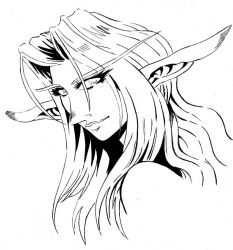

Les Terres de Kirin Tor
Gwendolline
Points : 10

Joué par :
[ Information masquée ]
Age : 268
Lieu de naisance : Ashenvale
Sexe : Femme
Race : Elfe
Faction : Alliance
Formation : Prêtre
Niveau : 60
Guilde : Ordre des Hospitaliers (l')
Artisanat 1 : Alchimiste
Artisanat 2 : Herboriste
Envoyer un MP
Informations hrp : Gwendolline à de longs cheveux blanc et bouclé qui orne son dos.
Ces yeux d'un vert émeraude, et son sourire espiègle, accompagnent aisément ses gestes, vêtu de ses apparats de prêtresse du temple de la lune. De taille moyenne, sa silhouette épouse son corps naturellement pour la rendre gracieuse.
Toujours en train de sourire, elle n'en reste pas moins réputé pour être impitoyable quand ses convictions sont attaquées et ses principes violés.
Description : Elfe de la nuit corsaire de passion et Prêtresse d'Elune de vocation, Gwendolline partage son amour de la médecine avec l'Ordre des Hospitaliers, l'ordre quelle fonda avec le professeur Elissande.
Toujours présente pour soigner les plus démunis et même les membres de la horde, le professeur de Théramore reste avant tout attaché aux valeurs, que son peuple et son éducation, lui ont enseignaient.
C'est en cela qu'elle entrepris la vaste campagne de sanitarisation des grandes villes de l'alliance.
Au jour d'aujourd'hui, Stormwind, Ironforges, Booty Bay et Théramore sont muni d'une clinique médicale dirigée par Gwen et ses associés.
Ère du Renouveau [1]
Lune de la Force [1]
Décade du Panda [1]
Une lueur au fond de l'eau
Il fut un temps ou pensive, Gwendoline se promenait au bord de la mer.
Ce matin la, quelque chose de spécial attira son attention...
Une lueur dans l'eau.
Penchant sur les cotés délicatement son visage elfique, ses yeux brillant fixèrent longuement l'objet.
Malheureusement la réverbération dans l'eau l'empêcha de bien discerné ce dernier et
c'est donc après sêtre dévêtu que la Prêtresse d'Elune plongea et partie pécher le dite objet, toujours intrigué.
Remontant à la surface, elle se délecta longuement des caresses du soleil se reflétant sur son visage dégoulinant d'eau de mer. Et c'est le visage à moitié dans l'eau, ses longues oreilles palpitants le miroir aquatique, qu'elle ouvrit sa main et découvrit une magnifique perle de Nacre.
Un sourire aux lèvres, elle sortit de l'eau, égouttant sa longue chevelure et décida de se rendre chez un bijoutier pour faire un pendentif de sa trouvaille.
La nuit tomba...
Une nuit paisible au son apaisants des vagues caressant la plage et des grillons accompagnant un ciel dégagé empli d'étoile.
Gwendoline décida de profiter de cette magnifique soirée en se promenant à nouveau en bord de plage quand soudain, ça perle, accroché autour de son cou, se mise à luire d'une lueur vive...
Surprise, l'Elfine retira son collier et le déposa sur une pierre ou elle fixa l'objet.
Une forme fantomatique apparut...
- Enfin de retour... Chez moi...
Clignant rapidement des yeux, Gwendoline observa le fantôme, un reflet de curiosité brillant dans son regard.
- Qu'elle type de fantôme étant vous pour hanter une perle ?
La forme se tourna vers la prêtresse, la fixant du regard, un sourire aux lèvres.
- Je suis Juan Ramarico, Marin au service de l'alliance. Du moins... Je l'étais...
Une grimasse se dessina sur son visage spectral.
- Prêtresse... Vous devez m'aider à sauver mon âme.
- Mais... Comment ?
A peine eut-elle le temps de dire c'est quelques mots que la forme spectrale disparut aussi brievement que son apparition...
Septique et choqué par le sort de ce pauvre fantôme, Gwendoline se rendis le lendemain à la capitainerie de la ville pour commençer des recherches.
Et c'est au bout de deux jours d'investigation, que la prêtresse se rendit dans le cimetière de la ville et trouva ce qu'elle pensa trouver au juste endroit... La tombe du marin fantôme.
- Petit fantôme... Je vais te laisser rejoindre ton tombeau afin que tu puisses reposer en paix.
Elle posa alors le colier et s'en retourna...
Qui fut assez fou pour abandonner richesse contre l'âme d'un inconnu ?
A son retour, Gwendoline aperçu le fantôme du marin au coin d'une ruelle. Ce dernier lui indiqua une maison...
- Setait ma maison, prêtresse, prend ma richesse, elle ne me servira pas la ou je vais... Et merci encore ! Qu'Elune vous bénisse.
S'inclinant avec respect devant le fantôme qui se dissipa aussi tôt, Gwendoline pénétra la maison du marin mais ne trouva absolument aucune richesse.
Aucune richesse à une exception près...
La présence d'un livre sur la table du salon.
S'approchant un sourire d'interrogation aux lèvres, elle lut l'intitulé de ce dernier.
- "Perle des Délices, Les Recettes de la Mer"
Secouant son visage doucement en contemplant l'ouvrage, l'Elfine s'en saisi et quitta le domicile du marin...
Qui crois abandonner un trésor en le sacrifice obtiens parfois plus que ce qu'il ne pense.
D'une perle de nacre abandonnée naquis une perle du délice qui j'en suis sur... Régaleras nos fières Buccanier sur l'Arpenteur...
Et un bon repas en ses temps difficile, Pirate ! Sur que sa vos tout l'or du monde... :)


Décade du Gorille
Décade de l'Ours
Lune d'Agilité
Décade du Tigre
Décade du Singe
Décade du Faucon
Lune de l'Esprit
Décade de la Chouette
Décade de la Baleine
Décade du Lapin
Ère du Conflit [5]
Lune de la Force
Décade du Panda
Décade du Gorille
Décade de l'Ours
Lune d'Agilité [4]
Décade du Tigre [1]
Compte rendu de la 1er Convention Médical de Stormwind
* Une affiche dans Stormwind à l'entrée de la Cathédrale *
Citation :
La réunion qui s'est dérouler le 7 ème jour de la décade du Tigre à réuni les membres de la Red Cross, Les membres de l'Ordre des Hospitaliers, les représentants de l'Ordre impérial, de la Garde de Stormwind et de la Sainte Inquisition.
Après 2h30 de réunion intensive, les points suivant sont ressortie :
1. Organisation sanitaire :
a) Enumération des différentes structure :
- Groupe dintervention durgence (Red Cross)
- Permanence médicale inter cité (Hospitaliers)
- hôpitaux de campagne (Hospitaliers)
- Gestion de structure sédentaire (Hospitaliers)
- Information et prévention médical (Red Cross)
- Bureau de soin des pathologies paranormales (La Sainte inquisition)
b) Rôle de ses dernières :
- Groupe dintervention durgence :
Habilité pour des interventions durgence médicale, le groupe dintervention endossant le rôle de secouriste.
- Permanence médicale inter cité :
Permanence dun médecin dans chaque cité durant une permanence journalière. Permets aux populations locales de rencontré un médecin pour différente consultation, bilan médical.
- hôpitaux de campagne :
Propres aux campagnes militaires ou aux catastrophes écologiques. Les hôpitaux de campagne ont pour but de soigner sur place et dopérer acte chirurgical sur des populations en danger suite aux différentes causes qui ont poussé à la création de lhôpital temporaire.
- Gestion de Structure sédentaire :
Les structures médicales sédentaires peuvent aller de linfirmerie à lhôpital. Pour des raisons de sécurité médicale, ses structures doivent être gérées par un personnel soignant qualifié.
- Information et prévention médical :
Rôle et structure coordonné ayant pour but dinformer population et dencadrer des cycles de prévention au près du grand publique. Cest dernier encadre aussi dans un cadre durgence médical de proximité, les différentes manifestations grand publique (Fête populaire, grande cérémonie religieuse, etc )
- Bureau de soin des pathologies paranormales :
Ayant pour but daider les personnes possédées ou maudites à se soigner par la magie de la lumière.
c) Logistique :
La logistique des différentes structures médicales doit être assurée par les propres moyens et de concert avec une personne responsable de structure.
Chaque structure se verra donc nommer un responsable qui agira sous la responsabilité du conseil de coordination.
d) Financement :
Tous comme la logistique et pour assurer une indépendance de chaque ordre vis-à-vis des différents territoire souverains ou agissent les personnels soignants, le financement de chaque structure sera assuré intégralement par les guildes.
e) Rôle du clergé :
Les clergés en places auront pour rôle dinformer les populations des différentes structure médicale existante afin de désengorger les établissements religieux devenus de véritable hospice en temps de guerre. Un rôle informatif donc.
f) Rôle des instances militaires :
Les instances militaires (milice, garde royal, ordre militaire) aurons pour but de protéger le personnel soignant. Si la sécurité du personnel soignant nest pas assurée, aucune structure sédentaire ne sera assurée dans un endroit. La santé du personnel soignant et prioritaire et donc sa sécurité en incombe.
2. Coordination sanitaire :
a) Rôle des coordinateurs :
Les coordinateurs sanitaires ont pour rôle de gérer chaque institution au sein dune commission représentatif de chaque Ordre participant au système médical. Les propositions, décision et orientation sont prisent en commission.
Chaque coordinateur, peu aussi demander, louverture dune convention dont il sera lorganisateur et sous validation de la majorité des membres de la commission.
b) Nomination des coordinateurs :
Chaque Ordre intégré dans le système de santé se voit attribuer la présence de deux personnes au sein de la commission représentative, habilité à siéger aux tables des négociations. Dans le cadre du travail de coordination, lune des deux personnes sera suppléante du premier. Ensuite, chaque ordre est habilité à choisir comme il lentend, les deux membres devant siéger à la commission.
3. hôpital de Stormwind :
a) Gestion et utilité :
La gestion sera mise en place par lordre des hospitaliers. Les bâtiments seront fournit gracieusement par la ville de Stormwind et la sécurité assurée par les autorités militaire local et impérial.
Il incombe aux différentes autorités militaires dorganisé la répartition des taches en ce qui incombe la sécurité du personnel soignant et des patients.
b) Ses différents rôles :
Lhôpital de Stormwind et un projet pilote. En premier lieu, il permettra de centraliser dans une seul structure, les soins palliatifs, les consultations et la chirurgie.
c) Financement :
Tous soins et hospitalisations seront entièrement pris en charge par lhôpital. Les patients auront lopportunité, sils le désirent, de faire des dons pour la gestion de lhôpital.
LOrdre responsable de lhôpital, auras à gérer le financement intégral des soins sopérant dans sa structure.
d) Sécurité :
La sécurité sera à lentière responsabilité des autorités militaire local. Aucun soin ne sera assuré et lhôpital sera fermer temporairement, si le médecin responsable de service, trouve que la situation devient trop dangereuse pour le personnel soignant et pour ses patients.
Le financement de la sécurité sera à la charge des autorités militaire.
e) Indépendance de la structure :
Lhôpital restera indépendant de tout clergé et de tous états souverains.
Si cette neutralité est remise en cause par quelque divers mode de pression, lhôpital fermera ses portes et sera transférer dans une autre cité acceptant les conditions dinstallation et de fonctionnement.
Décade du Singe [2]
Ouverture de l'Hôpital de Stormwind
Après des mois de travaux en collaboration avec de nombreuse personne, l'Ordre des Hospitaliers et fière de vous annoncer l'ouverture de l'hôpital de Stormwind.Une Nouvelle Etoile
Cette hôpital que vous trouverez au nord du quartier des commerçants accueillera toutes personnes désirant soin ou conseil médicaux.
La permanence sera assuré par un membre de l'Ordre des Hospitaliers, sous la sécurité des membres de la Garde de Stormwind.
Rapellons que la création de l'hôpital de Stormwind fais suite à l'adoption de la Convention Sanitaire adopté en assemblé inter guilde.
Le Professeur et Docteur Gwendolline est a ce jour nommé responsable de la structure sédentaire de Stormwind.
Le Professeur et Docteur Elissande la secondera dans ses taches administrative.
Qu'Elune vous guide sur les sentiers de la vie.
- Docteur Gwendolline Amalstone.

La nuit était déjà à son comble quand Gwendolline fut réveiller par des battements de porte.
Allumant sa bougie, elle se leva, revêtant sa robe de chambre en soie. Dun pat félin, la doctoresse savança quand de nouveau battement lui confirmèrent la présence dune personne.
Elle tourna la poignée, bougie en main. A la porte, Le Petit Arnaud, le cadet Déchaumiez, une famille de paysans de Goldshire.
- Mdame Gwendolline ! MDame Gwendolline ! Cest ma sur ! Elle va mal ! Vite !
- Jarrive petit, calme-toi.
Gwendolline sourit tendrement à lenfant, lui caressent la tête dun geste maternel.
Lenfant, le regard anxieux regarda la doctoresse se tourner et prendre sa besace.
Prenant seulement le temps de mettre ses bottes, La prêtresse accouru en robe de chambre au plein milieu de la nuit, accompagner du petit.
Arrivant enfin devant la maison, le Père Bertrand accueilli Gwendolline, lui aussi chagriner.
- Entrée Docteur, elle est dans sa chambre.
- Merci Bertrand, conduisez-moi auprès delle.
La Doctoresse avança alors dans la modeste maison, se dirigeant vers la chambre de la petite.
Des toussotements sentendirent depuis le couloir.
Ouvrant la porte délicatement, Gwendolline trouva un petite être blotti dans son lit. Une bougie allumée sur sa table de chevet et son poupon allongé à cotée de la fille.
La prêtresse, sapprochant, lui parla dune voix douce et calme :
- Agnès, cest Gwendolline.
- Bon zours ma dame
Des toussements roque et glaireux empêchèrent la petite den dire plus. Gwendolline sassit à cotée delle, le visage triste, déposants sa main sur son front pour prendre sa température. Agnès de ses six ans, ouvrant ses petit yeux vert, de magnifique cheveux noir serpentant sur ses épaules, les draps et son coussin.
- Madame Gwendolline * Koff * Soyez pas triste Lui dit la petite, la regardant dun air fatiguer en souriant.
Gwendolline retira sa main et pris sa besace pour chercher une potion.
- Madame Gwendolline * Koff * Dans ma prochaine vie * Koff * Ze serais Docteur comme vous.
- Allons ne dit pas ca, cest pas fini.
Les yeux brillant, la Prêtresse dElune la regarda dun air dépiter.
- Madame * Koff * Gwendolline Pleurez pas sil vous plaît * Koff * Ze suis pas triste. Sil vous plaît * Koff * souriez-moi.
Gwendolline la regarda, fiole en main, cette dernière tremblotant doucement Avant de lui sourire tristement.
Ses doigts chauds glissèrent délicatement sur la joue de la petite fille qui, lui souriant-elle aussi tendrement, plissa ses yeux, laissant échapper une larme de bonheur.
Alors, dans une dernière expiration, ce petit corps blottit dans les couvertures, cessa de vivre
Inclinant la tête, Gwendolline ne put retenir ses larmes, coulant sur son visage, ses yeux fermer De son pouce elle essuya doucement la perle deau du visage de la petite, avant de se relever et de border à nouveau la petite. Impassible, la doctoresse rangea la potion dans sa sacoche et tourna une dernière fois son visage face à Agnès.
- Je te jure de toujours sourire à la vie petite fée
Elle se retourna alors, et se dirigea vers la sortie de la chambre. Ouvrant la porte, elle aperçut la famille de la petite lattendant à lentrée. Gwendolline inclina son visage, déposants sa main sur lépaule du père, restant stoïque à lidée davoir perdu sa petite fille.
La Prêtresse quitta la maison et rentra à Stormwind
Dans sa chambre, après avoir fermer la porte et soufflé sa bougie, Gwendolline serra fort son coussin contre elle, pleurant de tristesse.
Pleurant comme jamais.
Seul à labri de tous les regards, elle pleura toute sa peine
Dans le ciel ce soir la
Une nouvelle étoile Naquis
Décade du Faucon [1]
Une nuit d'orage
Au fin fond d'une grotte, vivait un étrange être. Ca stature humanoïde faisait penser qu'il s'agissait peu être d'un ancien humain Mais ses petits yeux malins et son sourire laissant refléter ses dents jaunies par tant d'années d'errance nous laissent septique quant à la véritable humanité de cet étrange personnage.
Pas très loin des montagnes de Dun Morogh, un petit homme du nom d'Alliar vivait au gréé des saisons, sous la caresse du vent et le cycle de la nature. Il était réputé pour être un original ermite ne parlant à personne.
Arriva un jour ou ce dernier se retrouva à chasser dans la forêt et un orage éclata Les éclaires déchiraient l'air, éblouissant les êtres vivant et les forcent à s'abriter. Les feuilles des arbres frémissants de terreur sous la fureur de vent. Alliar, un lapin sur l'épaule faisant office de butin de chasse, se réfugia au creux d'un rocher avant d'apercevoir l'entrée d'une petite grotte.
Le vent tournant et emmenant la pluie dans son abri de fortune, il se réfugia dans la grotte.
L'air ambiant sentait le moisie et le salpêtre Mais avait-il le choix ?
Il se posa à distance raisonnable de l'entrée et s'empressa de retirer ses vêtements mouiller, les laissant sécher sur une roche. Puis, il s'enfonça plus profondément dans la grotte, cherchant quelques objets à faire brûler, pour manger.
Au bout d'un certain temps, il trouva des ossements au sol.
Se penchant, il identifia ceux dun cheval
Rentrant bredouille, il retourna vers ses affaires quand il s'aperçut, en revenant près de l'entrée, qu'un être étrange était assis au sol, grignotant le lapin comme un animal déchiquettent sa proie. Il tendit délicatement son arc et s'approcha silencieusement. Une brise souffla légèrement dans la grotte et l'être renifla l'air. Aussitôt ! Il se retourna et l'observa un os à la main, le lapin à moitié consommer dans l'autre. Alliar, surpris, failli lâcher sa flèche, mais réussi à se contrôler.
L'humanoïde s'approcha légèrement Son regard mauvais.
Ce plaçant à distance de l'archer, la créature lui lança soudainement la carcasse du rongeur en pleine figure !
Lermite se protégea le visage et braqua sa flèche dangereusement quand il s'aperçut qu'il avait disparu.
L'orage se calma
Depuis ce jour, Alliar avait décidé de déposer une partie de son butin de chasse devant la grotte.
Arriva un jour après plusieurs mois ou les deux êtres purent enfin manger côte à côte.
L'être devait sûrement être un enfant nain abandonné depuis des années, ayant survécu comme il pouvait Quoi qu'il en soit, l'humanoïde se montra beaucoup plus amical qu'il naurait put le penser.
Un sombre soir d'hivers, arriva une affaire plus qu'étrange Les villageois se plaignait depuis peu de la disparition d'animaux de basse-cour et de volaille. Alliar était certes accusé mais aucune preuve tangible ne peser sur lui. Cela aurait pût se résumer à de simple vole mais arriva un matin ou la fille dun notable fut violer et tuer dans d'horrible circonstance
Il n'en fallut pas plus pour émouvoir le village et réunir les fermiers, fourche en main, près à tous pour venger cette attaque.
Ainsi, une dizaine de villageois, sur que Alliar y était pour quelque chose, partir en direction de son domaine.
Ce dernier, rêvassant devant la danse des flammes dans sa cheminé, les observas crépiter tendrement dans l'air ambiant. Ses yeux ce ferment peu à peu sous la chaleur ambiante il fut brutalement sorti de sa stase par des hurlements de rage.
Surpris, il prie son arc et sortie de sa maison. Des hommes en furie guidée par la haine coururent vers lui, réclamant vengeance ! Vengeance au nom de la lumière !
Il n'eut pas le temps de réfléchir. Lâchant deux flèches qui se plantèrent dans la tête de deux fermiers et s'enfuit au fin fond de la forêt, poursuivi par tous.
Les fermiers se séparèrent pour le traquer sous un tonnerre battant à nouveau, faisant tomber la pluie sur le front et le visage effrayé d'Alliar.
Soudain, il se retrouva au pied d'une falaise, bloqué
Trois fermiers l'ayant traqué se précipitèrent vers lui. Armant son arc, il ne lui fallut qu'une fraction de seconde pour en abattre deux mais ce retrouva une fourche dans le bras par le troisième.
- Pourquoi M'attaquez vous Je n'ai rien volé n'y violé
- Il faut des coupables pour tous La petite était bien bonne Mouahaha ! Mais tu va payer à ma place
- Maraud ! C'est donc toi qui
Le fermier retira sa fourche ce qui plia de douleur le chasseur.
Le violeur la pointa alors vers le ciel et se prépara à le tuer.
- Adieu vieille bourrique Niahaha ! !
L'orage tonna au moment ou l'homme abattit son arme sur le chasseur. Un giclé de sang s'écoula au sol.
Alliar ouvrit les yeux et observa le fermier, un pieu improvisé enfoncé dans le ventre. Derrière le paysan, se cachait un petite être trapu, le regard mauvais, des dents jaunie par le temps
Ce dernier, un sourire cruel aux lèvres observa le chasseur longuement, la pluie battante, s'écoulant sur son visage
Alliar, regarda, l'être dans les yeux et put apercevoir dans son regard, pourtant animal, une lueur d'humanité
Comme un sentiment de justice
Au coin de ses yeux pourtant mouillé par la pluie tombant comme jamais, il put apercevoir des larmes glisser
Alliar se releva et un fermier qu'il crut mort se dressa à son tour, doucement Haletant de douleurs L'humanoïde se retourna, s'en allant pour abattre le blessé, mais Alliar cria, lui demandant de s'arrêter.
Ce dernier tourna la tête vers le chasseur et s'enfuit quelques secondes plus tard.
- Fuit Fuit petite êtres
Le fermier s'approcha de lui en lui demandant de l'épargner.
- Alors vous vous n'étiez pas le coupable Nous nous somme fait berner
L'orage cessa L'archer aida le fermier à rentrer au village et ce dernier expliqua à tous, comment leurs confrères les avaient tous dupés
Ainsi le temps de l'hiver passa et l'être humanoïde disparut des montagnes
Certaine rumeur raconte qu'il est retourné en enfer, d'autre raconte que c'était un envoyez de Trall
Quant à Alliar, il quitta la région et lont entendit plus jamais parler de lui
Lune de l'Esprit [1]
Décade de la Chouette [1]
Décade de la Baleine
Décade du Lapin
Troisième Ère [13]
Lune de la Force [2]
Décade du Panda [1]
Rapport Public N°1 - Epidémie de Peste à Stormwind
Rapport Public N°1 Conseil de Coordination Sanitaire
De : Professeur Gwendolline Amalstone Ordre des Hospitaliers.
Sujet : Evènement épidémiologique du 3ème jour de la Décade du panda.
Avis à la population, mesure importante :
Suite à un début dépidémie de peste dont deux cas officiellement recensé par les autorités sanitaire de Stormwind, des mesures ont été décidées.
La population est prié de prendre note de ses dernières.
Dune part :
Hissage du pavillon Bleu :
Prescription au professionnel :
Les routes commerciales seront surveiller, toutes marchandises et personnel professionnel devront être ausculter par un référent sanitaire.
Dune seconde part :
Niveau dalerte 2/5 :
Prescription à la Population :
- Coopération totale avec les Forces de lOrdre et les autorités Médicales.
- Obligation au patient infecter dêtre soigné sous peine de mise en quarantaine.
- Recommandation de se faire examiner en cas de doute.
- Obligation de suivre lensemble des recommandations spécifique qui seront donné par annonce officielle si besoin.
- Traitement obligatoire préventif à lensemble de la population.
- Toutes personnes suspectées de maladie devront se présenter sous 24 heures aux autorités sanitaires.
- Toutes personnes malades nont pas le droit de quitter la ville sans autorisation médicale écrite.
Prescription aux Personnels de Soins :
- Mise en place dun observatoire épidémiologique.
- Soigner la maladie le plus rapidement possible.
- Isoler le patient dans une chambre à part en cas dhospitalisation prolongé.
- Prendre un traitement de précaution.
Prescription à lArmée :
- Faire appliquer les recommandations à la population
- Surveillance des ports commerciaux et des entrées de la ville.
- Mener vers lHôpital ou le centre de soins tout cas suspect.
- Surveillance militaire des points deau.
En conclusion :
Ordre dabatage :
Suite au évènement épidémiologique, tous les rats de la ville devront être abattus à vu.
Le présent rapport public fait office de déclaration officiel.
La signature de Gwendolline et le cachet du conseil de coordination sanitaire de Stormwind figure en bas du document publier dans tous les lieux stratégiques et les auberges de la ville.
Décade du Gorille [1]
Fin d'Alerte Epidémiologique à Stormwind
Ordre de retour à la normal :
Stormwind reprend un statut d'alerte sanitaire de niveau 0/5.
Toutes les activités peuvent reprendre leurs cours normalement.
L'ordre d'abatage reste actif durant 1 mois
- Professeur Gwendolline Amalstone, Hôpital de Stormwind
Décade de l'Ours
Lune d'Agilité [3]
Décade du Tigre [3]
Dissolution du Gouvernement de Stormwind
* une affiche dans Stormwind ** une affiche * Echec de la nouvelle administration à Stormwind
Citation :
Avis à la Population !
Suite à l'affaire Blichtein, le gouvernement à été démis de ses fonctions et rendu démissionnaire.
Le professeur Gwendolline Amalstone c'est vu confier la tache de former un nouveau gouvernement.
En attendant que cela ce face, Stormwind reste sous administration martial.
La Garde de Stormwind
* Afficher dans Stormwind *
Citation :
Echec de la nouvelle administration de Stormwind - Cause & Conséquence
Par : Professeur Gwendolline Amalstone, en charge de la formation du nouveau gouvernement.
Sujet : Information à la population
Suite au récent évènement de Stormwind et à la prise de pouvoir administrative de la garde de Stormwind, rendant démissionnaire lancienne administration (gouvernement), lordre des Hospitaliers cest vu confier la lourde tache de restructuré et nommé une nouvelle administration.
Après 4 jours de dure travail avec des collaborateurs compétent, une réunion cest tenu pour expliquer le concept de la nouvelle organisation, il a été décidé la structuration du gouvernement de cette façon :
Deux guildes liées à la coordination. Les affaires militaires revenant à la Garde de Stormwind et les affaires social revenant à lordre des Hospitaliers.
Serais par la suite formée un conseil des guildes qui réunirait lensemble des guildes accepter dans le conseil, par les deux guildes en charge de la coordination, et ainsi discuterai des prochains avancements de la ville en terme de politique social et militaire que le roi et le régent, laisseront en charge au gouvernement.
Malgré cette décision approuvée par la majorité des guildes influente représentées lors de se conseil, la Garde de Stormwind, à fais savoir par lintermédiaire de son émissaire, quil refuse la formation du gouvernement.
Etant donné que la Garde de Stormwind, à actuellement le pouvoir administratif en main, il en découle plusieurs conséquence de ce refus.
1. La preuve formelle du coup détat fomenté par la garde de Stormwind. En refusant de cédé a nouveau le pouvoir, comme compris dans les engagements précédents, a la structure du gouvernement, la garde reste seul tyran de la politique administrative de la ville.
2. Le refus de collaboration avec un ordre neutre, quest celui des Hospitaliers dans les instances de coordination de la cité. En refusant cette aide, la garde refuse ainsi laide de ses alliers Elfe, nain et Gnome, ce qui porte atteinte à lalliance décider par les grands dirigent des royaumes en place.
3. Refusant de travaillé dans une cité sous contrôle militaire totalitaire ou linsécurité règne, LOrdre des Hospitaliers ferme les portes de lHôpital de Stormwind jusqu'à ce quune situation plus calme règne sur la cité. Aucune permanence de soin ne sera organisée tans que durera la crise et Stormwind sera plongé dans un gouffre sanitaire sil le faut.
A noté que toute les conséquences peuvent être démenties si la Garde de Stormwind accepte de prendre ses responsabilités et de partagé le pouvoir administratif avec toutes les guildes qui vivent en Stormwind et désirent voir prospérer leurs citadelles.
En cela la faute actuelle et rejetée sur le Lieutenant Nyele que les Hospitaliers considèrent comme une fanatique au service de linquisition voulant prendre le pouvoir pour elle seul en profitant de la faiblesse et de lincompétence du Capitaine Norghaal qui à osé faire emprisonner les membres de lancien gouvernement sans avoir lautorisation du Roi pour le faire.
Que le peuple de Stormwind prennent à présent ses responsabilités !
Professeur Gwendolline Amalstone
Anciennement en charge principale de la formation de la nouvelle administration de Stormwind.
Décade du Singe
Décade du Faucon
Lune de l'Esprit [8]
Décade de la Chouette
Décade de la Baleine [3]
Départ imminent
Douce odeur diode marine.La Senteur des Epices
Voici quelques jours déjà que Gwendolline observé les quais de Booty Bay.
Cest affaire fin prêtes, léchéance de son départ en mer, approché de plus en plus.
Ca faisais des mois quelle navait pas repris la mer vers des contrés inconnu.
Des mois quelle se mourrait à petit feu au devant de cet appel de la forêt aquatique où le temps et lespace non plus dimportance
Des mois quelle avait sacrifié ça propre conscience pour fonder les hospitaliers
Et la voici enfin, fin prêtes, baguage en main, observant le Glaive des Mers, son futur navire.
Gwen pris ses bagages et installa ses quartiers de marine.
Visitant le navire dun regard inquisiteur, observant chaque poutre et chaque stock de nourriture.
Le futur équipage de ce navire, des gobelins pour la plupart, allais partir avec à leur bord, un médecin de marine des plus renommé.
Ce qui rassurait grandement les mariniers.
Gwendolline elle, rêvé déjà du grand nord, et de sa mer en furie
Lexpédition Gobeline pour Northrend partirai dans la soirée
Et durerai quelques temps
Le feu crépitait enfin dans la cheminée.Le Bruissement des Vagues - Partie 1
Gwendolline y déposa sur un crochet de métal grisé par la cendre, une marmite de cuivre.
Les flammes léchant le contour de ce chaudron, leau ne tarda pas à séchauffer à l'intérieur.
La Prêtresse dElune leva son regard souriant et retourna à ça table de travail.
Des légumes y étaient déposés, quelques champignons fantôme et de la viande de Kodo encore sanguinolente.
Elle se saisit d'un couteau et découpa quelques tranches avec délicatesse, laissant la lame filer le long des muscles, tendre comme du beurre.
Par la suite, Gwendolline en profita pour découper les tomates et un brin de basilic quelle ajouta dans sa préparation.
Quelques épices venaient de rejoindre un petit amas de feuille aux multiples origines, quand l'eau commença à bouillir. Il était temps de passer à la cuisson
Gwendolline se saisit de la viande et la déposa dans la marmite, l'observant s'imprégner d'eau.
Elle y rajouta du sel qui se dilua dans tout le bouillon créant presque de l'écume au devant des bulles remontant violemment en surface.
Le temps pressa à présent !
La Prêtresse se saisit des herbes aromatiques et les diffusa dans le bouillon, y déposant par la suite, les tomates et son basilic.
Une douce odeur commençait à émaner de la préparation. La viande elle, perdait sa teinte rouge pour une teinte marron, parfumée d'épices et d'amour.
Se saisissant de sa cuillère de bois, Gwendolline remua son ragoût délicatement...
Le bouillon était près...
La viande en surface crépitait encore dans les bulles orangés de l'eau épicer.
Une vapeur délicieuse s'échappant des aliments, Gwendolline ferma les yeux pour sentir sa cuisine, un sourire de satisfaction aux lèvres.
Elle entendit la porte s'ouvrir.
Passant la tête par la sienne pour vérifier, elle aperçut Elissande, Teiana et Hatonjan entrée.
Gwendolline sortie alors la marmite des flammes.
Revêtant un tablier vert avec quelques motifs, elle pris couvert et assiettes qu'elle installa dans la salle à manger.
Les trois Médecins la regardaient, quelques grognements ventraux trahissant leurs faims.
A peine les couverts furent-ils installés, que tous s'attablèrent.
Gwendolline retourna en cuisine et se saisie de la marmite préalablement sortie du feu quelle apporta dans la pièce commune, un sourire aux lèvres, les yeux plein de malice.
Après avoir déposé à nouveau la marmite, La Prêtresse dElune se saisi d'une louche et servie ses confrères.
La viande fumante de volupté, emplis d'un parfum d'épice des contrées elfique, ne pouvez que donner l'eau à la bouche.
Ayant fini de servir son repas à ses patients, alors Hospitalisé, Gwendolline sassis à son tour et respira la douce odeur de ce repas, soupirant un Bon appétit !
Les vagues séchouant sur la plage, lodeur marine de liode et le bruissement de la houle caressa quelques planche de bois.
Le crissement des oiseaux marins comme seul sonorité de cette magnifique journée, le vent alla danser avec les feuillages exotiques des palmiers.
Un colibri se posa sur une feuille
La petite stature de cet oiseau des îles, butina quelques pucerons aspirant la sève de larbre, en créant un doux nectar sucré délectant les fourmis rouges, autochtones, élevant cest batterie dinsecte pour leurs colonies.
Après un mets de choix, loiseau-mouche pris son envole pour avancer vers la plage
Un étrange rayonnement attira son attention
Jonché sur le sable blanc, minuscule grain de pierre millénaire, quelques planches brisées
Les vagues, toujours continuant leurs balais aquatiques, tentant à chaque instant de gagner un combat éternel sur une plage brûlante, ce heurtèrent cette fois, à ces quelques objets recrachés de locéan
Le colibri se posa sur lune des planches, approchant lobjet brillant en son extrémité
Marchant avec prudence, il posa ses pieds minuscules sur une surface plus mole et froides, à quelques centimètres de lobjet éveillant sa curiosité.
Tentent de picoter cette surface étrange, surpris fut-il, quand une perle rubis sortie de la surface !
Buvant à cette goûte de liquide rouge, il se rendit rapidement compte que le goût du sang nétait pas adapté à ses préférences culinaires.
La surface molle bougea !
Prenant rapidement son envole pour fuir un potentiel prédateur, le colibri déposa ses pattes sur une feuille alentour des arbres bordant la plage.
Un petit tas de planche bougea à nouveau
En dessous, une créature de grande taille entama une recherche dombre, sous le soleil flamboyant
Tirant son corps par la force de ses avants bras, sur cet océan de sable, lhumanoïde atteint enfin lombrage dun groupe de palmier.
Son doigt saignant, lhumanoïde retira sa bague pour la placer ailleurs, sessuyant ensuite sur le bas de sa robe mauve, son doigt endolorie.
Les lèvres gercées par la soif et son visage blanc de sable, lhumanoïde regarda vers la forêt, doù une forme apparut.
Sa vision trouble lempêcha de discerner les traits de son visage, mais de la présence de longue oreille la fit sourire
- San Sander Est-ce toi ?
La forme se pencha sur le sol pour saisir une noix de coco.
Plantant sa dague à lintérieur, linconnu se pencha sur lElfine blessé.
- Boit
Gwendolline, assise contre le palmier ne se fit pas prier, buvant goulûment le jus de coco.
Relevant son visage face à la forme, elle put reconnaître, de part sa peau bleutée, la présence devant elle, dun troll.
- Me Merci
- Votre navire cest brisé pendant la nuit, jai bien peur que vous ne soyez la seule survivante
- Cest Cest à cause de la Maladie
La Prêtresse dElune sévanoui soudainement
Le troll déposants sa main sur son front, grimaça.
Se redressant, il saisit des lianes et quelques planches de bois pour en faire un traîneau servant de civière
En cette splendide journée, deux êtres senfoncèrent dans la jungle.
Lun tirant lautre
A plusieurs lieu de la, au port de Menethil, la capitainerie nenregistra pas le passage du navire en expédition pour le Northrend
Navire, qui auraient du passer par le port, pour ce ravitailler en eau douce
Décade du Lapin [5]
Le Bruissement des Vagues - Partie 2
Cher journal,Le Bruissement des Vagues - Partie 3
Voici maintenant plusieurs jour que le bateau cest échoué
Je ne comprends pas comment un tel drame à put se produire sans que je ny pense
Maudite soit la peste gobeline. A cause, de cette calamité, notre équipage a succombé très rapidement en pleine mer.
Je pensais les marins gobelins de Booty Bay, immunisé à cette maladie, mais ce ne fut pas le cas.
Quarante huit heures de cauchemar
Entre des émeutes à bord, des tentatives inespéré de sauvetage par des remèdes chamanisme et autre croyance stupide, où encore le suicide a coup de mousquet du capitaine, je me suis rapidement retrouvé seul à bord
Ils avaient pourtant dit que cétait une mauvaise idée de faire monter une femme à bord
Ca porte-malheur quils disaient !
Moi qui ai servi 30 ans sur lArpenteur, les chiens
Repos à leurs âmes à présent Elune garde ses pauvres âmes et soit-elle louée pour ma survie.
Mes jambes ont laire dallées mieux Sûrement brisé pendant la tempête qui précéda le naufrage, je bénis Elune de mavoir donné la conscience desprit de magripper à ses quelques planches de bois
Les remèdes et lattelle que le shaman ma fait, ont lair de porter ses fruits, mais la magie salvatrice de la déesse ny est pas pour rien dans ma guérison rapide.
Les Trolls qui mont accueillit son étrange. Non point sur le faite quils ne maient pas découpé pour me manger, mais par leurs coutumes de vies.
Ici rien ne les ennuis.
La chasse, la pêche, fumer le tabac et les relations sexuels semble être leurs seuls passes temps.
Jai eu de la chance davoir était recueillie par le shaman, car il à permis de mintroduire rapidement dans cette tribu.
Javais passé une fois, une après midi à Stormwind, à lire les rapports de lAmiral Proudmoore concernant les tributs indigène comme étant des cannibales sauvage et dépourvue de sens moral.
Ce que je vois devant moi nest rien dautre quun paisible village, vivant en stase avec la nature qui les entours.
Sans doutes est-ce cela que le panthéon attendait de nous quand ils nous ont créés.
Protéger notre terre
La douleur me reprend et la fièvre na pas baissé
Sans doute un effet secondaire du vaccin contre la Fièvre des Maleterres dons Booty fut victime lors de mon départ.
Vous me manquez mes amis, jespère vous revoir bientôt
- Professeur Gwendolline.
Les caresses solaires réveillèrent Gwendolline de son sommeil.Le Bruissement des Vagues - Partie 4
Relevant les yeux sur le plafond de cette hutte recouverte de feuillage en guise de toit, elle se tourna et posa pied à terre, cachant sa nudité par la couverture faite en tissage dherbe sèche.
A coté delle, pendent à coté dun crane de singe et de quelques herbes exotiques, sa robe mauve et blanche trôna face à lElfine.
Sen saisissant, la prêtresse dElune revêtis son habit avant de sortir prendre lair.
Au dehors, quelque trollesses aborigènes occupés a allumé un feu de camps ou trône au-dessus une grande marmite, tournèrent leurs visages étonnés vers Gwendolline, sétirant au bon matin.
- Ainsi vous êtes guérie.
Surprise, Gwen se tourna vers le Troll venant de lui parler.
Souriante, lElfine plissa son regard avec douceur avant dentamer à son tour la conversation avec le shaman.
- Merci de vos bons soins, Shaman.
- Je nallais pas laisser mourir une Keldorei sur la plage tout de même
- Certains de vos confrères de la horde se seraient fait un plaisir de me traîner dabord en forêt pour me faire mijoter dans une marmite.
- Parce que vous pensez que ce nest pas dactualité ?
Le Shaman esquissa un sourire, dévoilant ses dents incrustées de fer.
Gwendolline frémi !
La sensation de peur lenvahie, parcourant son échine dun long flux glacial lui faisans avaler ça salive de travers.
Les trollesses observant sa frayeur, se mire à rire en même temps que le Shaman, entrant dans un fou rire à son tour.
Soupirant de soulagement, Gwendolline put reprendre sa respiration.
Sans doute, venez til de lui offrir lune des plus belles peurs de ça vie.
Pour les autochtones, ça devait sûrement être là, un moment de rire dont il parlerait sûrement à leurs proches pendant des mois.
Sinstallant, Le Shaman et la Prêtresse discutèrent longuement
- Ainsi vous nêtes pas au courant de la première et seconde guerre ?
- Je ne savais même pas que mon peuple nétait plus maître des terres dAzeroth Cest attristant que nous ayons ainsi était abandonné dHakkar.
- Je ne vous demanderai pas votre age, mais je suis notamment surprise de votre connaissance dHakkar, au vu de votre évolution au saint de ce village.
- Ne vous méprenez pas. Je ne suis pas un natif de ce village mais un échoué comme vous. Cest Troll mon recueillie comme je lai fait avec vous, Keldorei, mais cétait il y a bien des cycles de cela Mais dite moi Je nai jamais vu dElfe aussi pale que vous, vous avez une maladie de la peau ?
- Hé ! Hé ! Non. Je suis une Elfe de la Nuit.
- Une Elfe de La Nuit !?
- Cela même.
- Mais quest-ce que cest que ça encore ? Une évolution ?
- Mais non, les Elfes de la Nuit sont ceux de votre race qui on but au puits déternité.
Le Shaman resta perplexe Cette révélation, bien loin de lenchanté, lennuya surtout de part sa complexité. Apercevant sa moue désapprobatrice, Gwendolline enchaîna la conversation.
- Mais dite moi, voici deux semaines que je suis alité et aujourdhui je suis enfin prêtes à reprendre un peu de marche.
- Je pense que vous êtes guérie, oui.
- Y a til des cadavres sur la plage ? Des Gobelins ?
- Les chasseurs mont indiqué la présence de cadavre oui, les ruines de votre navire sont toujours échoués à quelques lieux de cela sur les récifs de notre île.
- Entendu
Après une collation, les deux convives se rendirent sur la plage
Devant Gwen sétala les ruines de ceux qui fut le Glaive des Mers, fier navire de la flotte du comptoir Gentepression.
Echoué sur un roché, bordé de récif de coraux rose, le navire se cabrant comme un fier destrier, laissa témoignage du terrible choque quil subit.
Sur la plage encore, quelques crabes se délectent des carcasses pourrissantes au soleil des gobelins morts
Il fallut bien une journée entière pour rapatrier les corps
Et cest quand la nuit tomba, quun feu immense sillumina sur la plage, rendant grâce au étoile, la lumière flamboyante des corps des défunts.
Ce soir la
Des chants indigènes guidèrent les âmes défuntes vers leurs dernières demeures
Sous les larmes dun docteur
Cher journal,Le Bruissement des Vagues - Partie 5
Voici à présent un cycle de lune que je suis sur cette île.
Le clan Troll qui ma recueilli ce nome le Clan Spearwood.
Leur mode dhabillement est quelque peu précaire, mais ce qui ma surprise cest cet onguent bleu dont il sinduise.
Ragnarok, le Shaman du clan ma exhorté à faire de même, me précisant que ma robe ne me sert à rien dans une jungle aussi épaisse.
Javais déjà fait ce constat lors de mes voyages en Strangleronce, mais je ne pensais pas quà long terme cela devrait être indispensable.
En effet, ma robe du dévot, certes me tiens chaud, mais les moussons commencent, je suis constamment en pleine humidité et mon corps pèse de plus en plus lourd.
A ce rythme la, mes vêtements vont se moisire et se désagréger.
Hier, jai donc pris la décision de me vêtir comme mes hôtes.
Jai abandonné ma tenue de grande prêtresse et mon tabar de médecin pour une sorte de pagne.
Menduisant le corps de cet onguent bleu, je me suis rendu compte quil agit sur la peau comme un vêtement. Misolant de lhumidité et du froid.
Cest tous simplement extraordinaire. Cet onguent et tiré dun arbre dont la sève et prélevé et mélangé avec une argile et quelques plantes qui lui donne son aspect bleuté.
Après un chauffage de la mixture, le produit perd son aspect visqueux pour épouser une forme plus huileuse.
Cest le shaman qui maida à minduire
Ce dernier badigeonna mon corps entier de cette mixture sans aucun geste déplacé, ce qui me surpris grandement.
Hier soir la lune était pleine, comme au soir du naufrage.
Chaque jour, la mer recrache des cadavres que nous brûlons chaque soir.
Et chaque soir, le même cérémonial pour rendre grâce à lâme des marins défunts.
Qui aurait put croire que je serai la seul survivante de ce drame.
Teiana, Elissande, Fany, Nosgoth, Hatonjan, Mornaglar et vous autres, amis du continent. Jaimerai tans vous faire signe de ma présence et vous dire ô combien je vais bien.
Si mes calcule sont bon, nous aurions du nous ravitailler à Southshore il y a trois jours de cela, mais bien entendu, notre non-passage à Menethil à dû éveiller quelques doutes
Je dois retourner sur le bateau
Je dois à tout pris récupérer le journal de bord du capitaine, les cartes, son sextant et faire sonner la cloche du navire.
Mon matériel de soin se trouve sûrement encore à bord, ainsi que le Minuscope.
En espérant que la furie de la mer na pas emporté ce dernier
Demain je prendrai une barque et jirais sur place
Ho ! Jy pense
Je ne tai pas parlé de Littleaxe, le chef du village. Je mattendais à un archétype du macho sans cervelle usant de ses muscles pour se faire respecter, mais je fut surprise de me rendre compte quil nest pas le meilleur combattant, mais le meilleur chasseur.
Ce dernier à trois épouses, quil respecte et honore comme il se doit. Cette civilisation à tellement de mystère que chaque jour je suis émerveillé à découvrir les raisons et les aboutissants de chaque attitude culturelle.
En effet, un bon chasseur et une personne qui ramènera un maximum de nourriture au village mais aussi à ses compagnes. Pouvant ainsi prendre en charge plusieurs « femelle », il en entretiens donc ses dernières et ça progéniture.
On reconnaît un bon chasseur, non pas au nombre de gibier quil apporte, mais au nombre de ses épouses.
Dailleurs comment naurait-je put voir le sourire plein dinsinuation que me lance Littleaxe à chaque fois quil me regarde
Est-ce du désir ? De la jalousie envers Ragnarock dont il pense que je suis une courtisane ou bien de la pitié devant mon ignorance dune culture dont je nai aucun repère si ce nest ceux que lon menseigne
Hier le shaman à raconter une histoire au coin du feu Lhistoire de deux enfants se baladant en foret malgré lexhortation de leurs parant. Et quand un tigre leurs tomba dessus, il furent dévoré.
Le shaman mexpliqua que cette histoire contenait plusieurs degré de moral, et que la sagesse dune personne se mesure à ses degrés de compréhension.
Jen ai trouvé deux personnellement, ce qui surpris le shaman, mais garda légitimement pour lui les autres niveaux.
Sans doute est-ce pour montrer et me rappeler que je suis leurs invités et non point un membre de la tribu.
Le temps sécoule à présent et la journée de demain sera difficile en effort et moralement
Ce soir, lil dElune mobserve et les étoiles me sourient.
Isha Féra.
Gwendolline.
Le Bruissement des Vagues - Partie 6
- Pense-tu que ce soit une bonne idée daller déranger le repos de ce navire, Gwendolline ?
- Je dois absolument récupérer mon matériel Ragnarok, quand je laurais en main, je pourrais à mon tour partager ma connaissance avec vous.
- Ta connaissance ? Mais à quoi bien pourra telle nous servir ?
- Vous servir ?
Gwendolline, harnachant solidement une corde contre quelques rondins, se tourna en grimaçants vers le shaman troll, qui la regarda sans comprendre ou voulez en venir lElfine.
- Je suis médecin dans mon pays, Ragnarok, ce qui veut dire que je connais les sciences qui permettent de soigner les êtres vivants.
- Va donc, si tu pense que cest la bonne solution, mais pense bien quen apportant le progrès chez nous, tu apportes un déséquilibre dont nous navons pas besoin. Donc soit prudente, dans ce que tu ramèneras.
- Je comprends tes crainte, Shaman, mais je dois commencer à préparer mon retour chez moi.
- Ta terre te manque tous comme les chants de la forêt me manqueraient si je venais à aller dans les grandes cités de pierre, dont tu ma décrit lexistence.
Gwendolline lui sourit, et terminant son nud marin, les deux compères poussèrent la barque à leau.
La prêtresse pris quelques rames de fortune, taillé à même des planches et se dirigea vers le navire fantôme.
Après une bonne demi-heure de pagaillage intensif, Gwen harnacha son embarcadère à une rampe de la passerelle. Grimpant à bord du navire.
Sur le pont, quelques squelettes de gobelins sont encore présents, sûrement dévoré par les charognards des mers que sont les mouettes.
Une légende parle de ses dernières, comme étant danciens marins morts en mer sétant réincarné dans ses oiseaux aux cries stridents.
La seul chose que put voir Gwendolline cest bien un nouvel exemple du cycle naturel.
Soupirant de tristesse, la prêtresse entra dans ce qui resta de la cale du navire pour rejoindre ses appartements.
Un bruit étrange attira son attention
Saisissants sa dague tribale, la doctoresse approcha avec précaution du bruit provenant de sa cabine Poussant la porte avec délicatesse
Devant elle, un humanoïde retourné, occupé à manger le contenu dun tonneau de baie lunaire, surpris Gwendolline qui se recula vivement.
Les écailles et ses épines dorsale ne mentaient pas sur la présence de cet invité !
Le Murloc tourna son regard vers la porte et, lâchant sa pitance, sapprocha dent menaçante, vers Gwen.
La Prêtresse dElune se ressaisie et invoqua lentement un sortilège dombre dont elle assena dun coup vif la créature !
Cette dernière tentant vainement de senfuir, tomba sous le coup du mot de lombre et sengouffra dans la mort.
Gwendolline acheva la créature en la poignardant à la gorge, son sang verdâtre se déversant sur les planches du navire
Entrant dans sa cabine avec attention, Gwendolline ce saisi rapidement de sa trousse de soin, de quelques potion ainsi que de ses cartes personnelles.
Un grand soupire de soulagement la rassura quand elle aperçut la présence du Minuscope, renversé dans un coin de la salle.
Priant pour quil ne soit pas cassé, elle le déposa, lui aussi, dans ses affaires et quitta sa cabine.
Un peu plus tard, après avoir visité la cabine du capitaine et récupéré son mousquet, Gwendolline retourna sur le pont pour sapprocher de la cloche du navire.
- Le Glaive des Mers
Un long soupire suivie la lecture de lécriteau sur larmature de bronze
- Repose en paix, arpenteur des mers.
Lors de son retour, dans la jungle, certain purent raconter louï dun sonnement de cloche
Chantant la dernière aventure dun navire qui emporta à son bord tout son équipage goblinoïde.
Cher journal,
Jai enfin récupéré mon matériel Quel soulagement !
Ragnarok fut surpris dapercevoir ô combien la médecine à évoluer depuis des temps immémoriaux.
Le minuscope fut sans doute lélément qui le déstabilisa le plus.
Il ne daigna plus madresser la parole pendant deux jours.
Et quand ce fut le cas, cétait pour me demander de réfléchir soit à un possible retour sur le continent ou bien à construire une hutte qui mappartiendrait, car vivre plus de deux cycles avec un ôte du sexe féminin sans avoir consenti un mariage est interprété par les Spearwood comme une hérésie à la nature.
Une violente dispute éclata en effet entre Littleaxe et Ragnarok à mon sujet. Concernant mes réelles motivations ou bien un potentiel avenir avec les Spearwood.
Que faire ?
Voilà quelques jours déjà que je réfléchis à la potentialité de vivre avec cette tribu jusquà la fin de mes jours.
Nest-ce pas cela laspiration au bonheur ?
Nest-ce pas la une vie recluse de toutes responsabilités ?
Que dirais mes proches, moi qui fut membre éminent dun gouvernement civil en capitale humaine et qui aujourdhui me retrouver habiller en seul pagne pour cacher mon intimité.
Au diable les responsabilités !
Toute ma vie jai poursuivi mes aventures marine à la recherche dune île comme celle-ci !
Je repense à mon mariage avec Sander, à nos 5 ans de vie commune sur cette île lors de lattaque de larpenteur par un corsaire de la horde.
Notre mariage à dut mourir le jour où, lont as décidé de regagner le continent et la civilisation.
Aujourdhui, jai enfin cette seconde chance. Seconde chance de retrouver ce que javais perdu.
Jeut beau être professeur de machin, administratrice de bidule ou ministre de truc ! Rien ne peu remplacer le bonheur que jai à être au coté de ses gens.
Je me retrouve ici
Je retrouve ce que javais perdu, il y a 25 ans de cela en rentrant à Auberdine.
Cest décider
Demain jannoncerai à Littleaxe que je veux entrer dans le clan Spearwood et que je prendrai en épousailles Ragnarok sil consent maccepter comme femme.
Cest étrange de relire ce premier paragraphe, cest la que je me rends compte ô combien les valeurs au quel je croyais ne sont quen faite fétu de paille devant les flammes de la tentation.
Consumé par ma propre ambition, ils se sont aujourdhui évanouis, car ces planches de fortunes non rien à enviés à cette île du bonheur à laquelle jaspirai depuis toujours.
Le mariage damour, cette idiotie moral quont nous inculque
Je sais ô combien un mariage avec Nosgoth aurait été voué à léchec tous comme celui avec Sander cest terminé dans les larmes.
Un mariage nest-il pas un engagement avec une personne pour partager les mêmes centre dintérêt ?
Jai de moins en moins envies de rentré sur le continent
En parlant de continent, jai fais quelques expériences de cartographie. Je suis à 5000 miles des cotes de Strangleronce, aucun navire ne passe dans le coin étant donné que le courant marin et inverse et se dirige vers Booty Bay.
Le capitaine à eu tord de vouloir remonter la côte de sud en nord, plutôt que de faire une traversé direction Théramor, profitant des courants du Maestrom pour ensuite regagner le nord en faisant escale à Southshore.
Cette incapable de capitaine à bien fais de se suicider. Je nimagine même pas la tête du Baron Revilgaz quand il va apprendre cette erreur de navigation et bien sur la perte de tout un équipage en mission pour linstallation dun comptoir Gentepression en Northrend.
Demain jécrirai un mot dans une bouteille, je sais que le courrant la mènera sur les cotes de Strangleronce.
Jécrirai un mot concernant laccident du bateau et son sinistre bilan gobelin.
Je ferai part de mon état de santé aussi.
La nuit est à présent tombé, et les faibles lueurs du feu de camps mempêche de continuer lécriture de ce journal.
Ce soir, si Ragnarok veux une femme, il ne sera pas déçu
Tiens
Je lentends arriver
- Gwen
Quatrième Ère [16]
Lune de la Force [11]
Décade du Panda [7]
Le Bruissement des Vagues - Partie 7
Le feu resplendissant dans la place principale du village, une elfine approchaLe Bruissement des Vagues - Partie 8
Vêtu de sa robe du dévot et de ses atours de prêtresse, son pat cérémonial, se rapprocha vers le flamboyant.
A coté du chef du village, un autre Troll, vêtu de ses habits de cérémonie et de sa couronne des esprits.
- Devant les esprits en cette soirée, Ragnarok, tu prie les ancêtres de te donner bénédiction.
- Devant les esprits ce soir, je prie les ancêtres.
Le ton solennel du shaman fit sourire Gwendolline.
En cette soirée ou le feu central illumine la clairière du village et ou chaque habitant porte un flambeau, la prêtresse dElune approcha à nouveau pour ce placer au cotés de Ragnarok.
Ragnarok se tourna vers sa promise et lui sourit, avant de prendre la parole.
- Les esprits nous accompagne ce soir Puissent les ancêtres consentir notre union !
A cet instant ! Le feu de camps devint dun vert éblouissant !
Une explosion se fit entendre et tout, revint à la normale
Les habitants du village, surpris, reculèrent par réflexe du foyer central.
Seul Ragnarok resta impassible ; souriant à Littleaxe, lui aussi sur ses gardes.
Gwendolline laissa échapper un rictus moqueur en direction de Littleaxe, avant delle aussi, prendre la parole.
- Elune me guide ce soir. En symbiose avec les esprits, la déesse puisse telle accepter lunion sacrée en cette soirée.
Le shaman pris des herbes, quil jeta au centre du feu, laissant dégager une douce odeur
Les bruits des djubés commencent à raisonner, une épaisse fumée blanche, envahie le camp.
Les champs tribaux remplaçants les soupirent de stupeur, le mariage battit son plein sous une pleine lune resplendissante.
Les deux époux, lun a coté de lautre au coin du feu, regardèrent se présenter devant eux, les offrandes.
Quand la liste de cest dernière prirent fin, Ragnarok se tourna vers Gwen, lui accrochant autour du cou un symbole tribal.
- Cest la marque de notre clan. Tu es du clan Spearwood à présent.
- Cest un immense honneur, mon époux.
Le sourire ravis de Gwendolline et ses yeux humide, trahir sont émotion, malgré le ton cérémonial en rigueur.
- Laissez moi vous offrir un présent, mon époux.
Gwendolline pris la broche qui orna sa coiffure. Une superbe broche elfique quelle gardait depuis sa plus tendre jeunesse.
La prêtresse glissa la broche au collier tribal de son époux, qui regarda sa compagne avec lui aussi, un sourire de bonheur.
- Cest une broche, que jai reçus du Baron Revilgaz. Cest pour moi un sceau dune grande importance. Et ce soir, mon époux, je vous en fait cadeau nuptial.
- Cest un grand présent que tu me fais Gwendolline. Je ten remercie. A présent que tu es une Spearwood, tu prendras un nom tribal.
- Un nom tribal ?
- Oui, cest le nom qui permettra aux esprits de te reconnaître.
- Que la tradition soit respectée, mon époux.
- Ainsi les esprits mon soufflé ton nom astral
Gwen le regarda avec un regard dattention.
- Les esprits mon soufflé le nom de Neysha.
- Neysha est donc mon nouveau nom.
- Ainsi les esprits ont parlés, Neysha. Soit mon épouse.
- Elune soit loué, Ragnarok, soit mon époux.
Les deux marié ce sourire.
Les yeux sentrecroisant, lun approcha de lautre avant quun doux baisé, ne vienne clôturer cette cérémonie.
Sous la pleine lune, et les rythmes endiablés des djubés.
Sous les danses et les champs tribaux.
Sous les flammes et lair marin.
En cette soirée de deuxième cycle lunaire, deux soupires sunir, dans un même désir.
Ce soir là, Gwendolline Amalstone mourut
Pour devenir Neysha
Neysha du clan Spearwood
Cher journal,Le Bruissement des Vagues - Partie 9
Voici maintenant plus de deux cycles lunaires que je suis ici.
Après mon mariage avec Ragnarok, la vie au village pris une tournure différente pour moi.
Jétais jusque là, une inconnue. Un hôte, tout au plus
Un hôte qui reste avant toute une étrangère.
A présent que le mariage munie à mon époux et quainsi le clan maccepta parmi eux, je suis Neysha Spearwood, du clan Spearwood.
Cest étrange de changer de nom, du jour au lendemain
Mais jai limpression que le nom de Neysha mest si familier, que cest naturel pour moi de me tourner en entendant mon nouveau nom.
Sans doute, est-ce la, mon nom divin ?
Celui que les esprits mon soufflé à ma naissance
Je suis si heureuse
Certain pourrait être horrifié à lidée, quun Elfe de la Nuit se soit marié avec un Troll.
Et pourtant, nest-ce pas le bonheur qui compte ?
Les apparences sont si futiles.
Notre physionomie de plus et presque pareil à lexception de ses dents, mais je sais, et je suis certaine, que nos espèces sont compatibles pour ce qui est de la reproduction.
Après tous, ne somme nous pas des Trolls transformés par le puits déternité ?
Le village a fêté notre union comme il se doit.
Je ne pensais pas que le mariage revêtait une telle importance pour se rappeler que lunion fait la création.
Ce qui ne peu sunir, nest pas voué à ce marier. Car le mariage chez les Spearwood est avant tout régis par les esprits, et eux seul, décide ce qui est bon ou mauvais en terme de partage conjugal.
Le devoir marital et simple chez les Spearwood. Honorer, coopérer et protéger.
Ragnarok part à la chasse, je prépare le dînée. Il me protège des dangers et je le protège de lui-même. Et bien sur, il mhonore autant que je le fais moi-même.
Rien de bien sorcier et qui, de plus, me donne du temps pour mes études local.
Jétais bien loin de mimaginer, quun idéal de mariage pareil pouvait exister.
Cest tout bonnement extraordinaire.
Aucune contrainte, aucune obligation, pas de tralala, je taime, moi aussi.
Nous nous sommes unis pour partager le fardeau de la vie, dans le respect mutuel lun de lautre et dans la coopération entre nos frères de clan.
Cette société est bien plus évolué que ce que je pensais.
Je me suis amusé à transposer cette culture pour les grands peuples, et le résultat est idéaliste.
Un peuple qui se respecterait les uns entre les autres. Sans individualisme accentué, mais une coopération entre tous, qui laisse tout de même place à laspect personnel de chacun.
Une vision globale de la vie et une direction de conscience spirituelle, pendant que les soucis de la vie sont vu personnellement mais avec laide dune communauté entière.
Voilà qui auraient put éviter deux guerres
La mousson va bientôt arriver selon mon époux. Et il va être temps de quitter notre village pour senfoncer un peu plus dans les terres. Car la période de mousson et significative ici, de condition climatique extrême. Comme des tempêtes tropical pouvant dégénérer au cyclone.
En senfonçant dans les terres, nous gagnerons un village troglodyte, taillé à même la pierre.
Quant je lui ai posé la question de savoir pourquoi les Spearwood ne restez til pas dans ce village ? Ragnarok me répondu que les Spearwood sont isolés de la mer, dont le poisson est une denrée élémentaire à léquilibre nutritionnel des membres du clan.
Cela me fit prendre conscience dune chose
Il va falloir faire des réserves.
Et il est vrai que de toute façon, le climat deviens de plus en plus difficile ici.
Le baume bleu me protège du froid et de lhumidité, mais notre hutte prend leau assez rapidement, ce qui pose un problème évidant
Ne parlons pas de lhygiène
Moi qui suis si à cheval sur ce principe, je me meure parfois dobserver certaine pratique de la vie courante.
Mais à y réfléchir Nest-ce pas là, une façon efficace de créer en soit des défenses immunitaires contre des affections nombreuse et courante de la jungle ?
Le Minuscope ma déjà révélé bon nombre dinformation très importante sur mes Mininsecte locaux.
Jai découvert des choses merveilleuses concernant les différents remèdes de Ragny. Comme le faite que la plus part agisse sur les mininsectes dune façon si efficace que ma magie divine et parfois plus lente à agir que les plantes que je découvre.
Mes connaissances en alchimie mon permis den extraire des potions et divers remède que je mets à disposition du clan.
Mon époux rentre, et il est temps pour moi de préparer le repas.
Puisse mes proches se sentir bien, et les esprits veiller sur eux, jusque dans leurs sommeils.
Isha Féra.
Elune soit louée.
- Neysha Spearwood.
Le Bruissement des Vagues - Partie 10La nuit bruissant du chant détrange dinsecte inconnu et des piaillements doiseaux nocturnes, une ombre approcha calmement de la luminosité.
Cela faisait sans doute deux jours quil guettait au même endroit, tous les soirs, observant le feu au centre de la clairière
Soudain, la raison pour laquelle lombre aux yeux rouge était présente depuis des jours, approcha.
Un enfant Troll.
Armé de son arc, il sortit discrètement de sa cahute en direction de la forêt, faisans signe à un autre troll, apparaissant à son tour.
- Chuuuuut, où ont va nous surprendre ! Dit-il en chuchotant.
- Je fais ce que je peu
Les deux trolls sapprochèrent lun de lautre et se sourire, avant de tourner les talons vers la forêt.
- Tu es sur quelle est la bas ?
- Oui ! Ca fais trois nuits que je lobserve prendre cette direction.
- Hé ! Hé ! Entendu !
Senfonçant dans la forêt, lombre aux yeux rouge saccroupie pour ne pas être repéré.
Les deux compères, larc bandé en main encoché dune flèche, poursuivirent leurs périples dans la tumultueuse forêt tropicale.
De ses pieds écrasés, lombre suivit les deux jeunes trolls sans mots dire, dans la plus grande discrétion.
Lun deux sarrêta soudainement.
- Tu Tu entends ?
Le deuxième troll regarda son comparse.
Lombre, elle, sallongea au sol soudainement, ce pensants repéré.
- Entendre quoi ?
- Ferme la et écoute, idiot !
Grimaçants, le second troll ferma les yeux et tendit loreille.
- Une cascade ?
- Oui !
Les deux garçons se sourirent et approchèrent en courant.
Au pied dune petite cascade, dans un bassin deau clair, Neysha était en train de se baigner.
Le chantonnement de lelfine, entonnant une mélodie Darnasienne, surpris les deux jeunes, qui restèrent tapis derrière les feuillages, observant cette Diane au corps bleu.
- Ouaa
- Chuuutt !!
Gwendolline, se tourna vers les feuillages, aillent perçu le soupire du jeune troll.
- Hey ! Qui est là !?
Saisissant ça masse luisante dune aura rougeoyante, lelfine, nue, sapprocha de la cache des deux trolls qui senfuirent en la voyant arriver !
La course fut frénétique !
Sautant de roche en roche et de tronc darbre en tronc darbre, le plus agile des deux jeunes chasseurs, réussis à prendre en distance son camarade.
Ce dernier, essoufflé, couru tout son saoul, en entendant les cries de protestation dune prêtresse dElune en colère davoir était surprise, pendant son bain nocturne.
Essoufflés, les deux garçons prirent une halte à quelques pat du village.
- Idiot ! Imbécile ! Sexclama til essoufflé.
- Jy Jy peu rien moi si elle à une ouï aussi développé ! Répondit son camarade tout aussi essoufflé que son comparse.
Soudain ! Une ombre aux yeux rougeoyants se jeta sur le plus affaiblie ! Sa mâchoire ornée décaille et de dents affûtées se refermèrent sur la gorge de lun des deux enfants, ne lui laissant pas le temps dexprimer un râle de douleur.
Terrorisé, son copain fixa son camarade les yeux ronds, tremblotant de terreur.
Le Murloc lâcha prise et, saisissant sa lance, sapprocha du deuxième troll, les yeux embué de larme, les lèvres tremblante de peur
Se jetant la lance en avant sur le deuxième enfant, le murloc fut soudainement arrêté de plein vole par une masse à laura rougeoyant, lancé en pleine face.
Le jeune autochtone se retourna et aperçu Gwendolline, fermant les yeux en invoquant la puissance dElune
Le Bruissement des Vagues - Partie 11Le sortilège sabattit de la même façon que son marteau.
Un fracas morbide envoyant le Murloc à plusieurs mètres en arrière, crachant son sang verdâtre mélangé au sang rouge de lenfant.
- Dit adieu à ta pauvre existante !
Le jeune troll, toujours vivant saccroupie au sol par peur.
A ce moment là, cinq météores enflammés, sabattirent sur la créature aquatique.
Hurlant de douleur, le murloc sombra dans la mort, le corps écrasé par des roches stellaire.
Gwendolline relâcha sa concentration en abaissant les mains, regardant le troll accroupi à ses pieds.
- Idiot ! Tu as failli mourir toi aussi !
Alors, alerté par les bruits du combat, plusieurs troll du village, Littleaxe et Ragnarok en prime, arrivèrent sur le lieu du combat.
Neysha, se précipita sur le corps de lenfant égorgé,
- Mais bon sang ! Quest-ce qui cest passé ici ! ? Hurla Littleaxe devant le carnage.
- Ont ce calme Répondit Ragnarok, sapprochant de sa femme.
Neysha, penché sur le corps de lenfant, grimaça.
- Il est dans un piteux état.
- Est-il mort ?
- Oui
- Alors que les esprits laccueil en leurs royaumes.
Cest à ce moment que des pleurs brisèrent la discutions entre les deux époux.
Ragnarok et Gwendolline se reculèrent pour laisser place à la mère de lenfant, saffalant sur le jeune troll égorgé par des dents affûtées.
- Que faisais cest deux enfants dehors à une heure pareille de la nuit ! ?
Neysha et Ragnarok détournèrent leurs regards de la pathétique scène, pour prêter attention à la fureur du chef de clan.
- Ils étaient venus mespionner pendant mon bain. La course poursuite a mal tourné.
Bien quil ait voulu laisser exploser sa colère, Gwendolline était dans son droit de corriger les deux compères. Bien quelle ne put savoir à lavance, la macabre conséquence de cette course effrénée.
- Shaman, est-ce que tu peu faire quelques chose pour lenfant ? Répondit Littleaxe, la voix enroué par la peine.
- Il est mort, chef, je ne peu plus rien pour lui
Un long silence plana, sous les pleurs dune mère
Gwendolline repris la parole.
- Je sais que vous êtes contre ma connaissance en médecine, mais je peu peut être faire quelques chose pour lui.
Ragnarok soupira un long moment
En effet, un dilemme de taille était en lui
Fallait-il laisser sa femme dévoiler une connaissance médicale dune telle importance quelle prendrait le risque de déséquilibrer le village dans sa compréhension du monde ?
Mais la vie dun enfant était en jeu.
Et là encore, le dilemme se posa
Nétait-il pas mort pendant une chasse ?
Bien que la perte dun être proche et une douloureuse expérience, elle est régit par la loi du plus fort
La loi de la jungle
Les pleurs maternels le fit céder.
- Fait ce que tu as à faire Neysha Dit-il dune voix désarmée.
Le sourire de Gwendolline en dit long.
- Prenez lenfant et mener le prêt du feu central
Demanda la chirurgienne dun ton ferme. Elle se tourna alors vers son époux.
- Ragnarok, je vais chercher mon matériel, prépare une table que je puisse lopérer.
Alors, le convoi funéraire se saisi de lenfant et avança, calmement
Vers le centre du village
Le Bruissement des Vagues - Partie 12Cher journal,
Voilà plus dune demi-journée que jopère cette enfant
Le contacte du bistouri me fait revivre, tans cette sensation me manqué.
Malgré tout, je suis coupable de cette sensation de plaisir, car il sagit tout de même de macabre conséquence
Je nai jamais opéré de troll jusque là, et de surplus, un enfant
Lopération ordinaire aurait durée moins dune demi-heure à lhôpital de Stormwind, mais là, la nuit et linconnu aidant, je préfère prendre mon temps
Quelle fin tragique Pourtant lhistoire des enfants qui partent en forêt nétait pas que veine parole Elle ce confirma à nouveau.
Le second enfant raconta son périple et ce qui cétait passé durant la nuit, pendant que je concentrais mes talents médicaux, pour restructurer le corps de lenfant.
Le murloc ne lavais pas raté. Un beau coup de dent sur la trachée, ce qui le vida de son sang en peu de temps et bien sur lempêcha de crier.
Au vu du coup, je posa la question à Ragnarok, pour savoir si ce genre dattaque était fréquente.
Il me répondit que non, étant donné que les murloc vivent sur lautre versant de lîle.
Là encore, je découvris une facette de lîle qui métait inconnu.
Une entente des territoires de chasse entre deux communautés autochtone
Quand lopération fut terminée, je rappela le souffle de vie dans le corps de lenfant
Elune daigna moffrir ses dons une fois de plus et louée, elle en fut.
Les yeux de lenfant, souvrirent
Balbutiant des paroles incompréhensibles, la mère du petit ne cessa de le serrer contre elle et de remercier les esprits.
Littleaxe lui, fut surpris
Il navait probablement jamais vu de rappel à la vie.
Son regard aurait sûrement à jamais, quelques chose dadmirable, quand il me fixera, dans les temps futurs.
Sous la houle de remerciement, je rangea mon matériel, allant retrouver mon foyer sous le petit jour.
Me lavant les mains, je me suis alors allongé, attendant quelconque reproche de la part de mon époux. Ce dernier ne mavait en effet, pas adressé la parole de la soirée, sûrement touché dans sont propres orgueils, par mes connaissances.
Il entra, pris une chaise et sassis à mes cotés.
Surprise, je fut, quand ses mains bleutées caressèrent ma chevelure blanche. Madressant des remerciements.
En réalité, je découvris à ce moment là, que ce nétaient pas la crainte qui le faisait reculer tans quà la nouvelle médecine.
Mais belle et bien la peur de ne pas être à la hauteur, quand un clan entier compte sur toi pour trouver remède à tes mots.
Javais déjà ressentit ce sentiment Celui dêtre impuissante face à un mot qui est pourtant de ton domaine.
Celui davoir tous les regards penchés sur toi et de ne pas trouver ou savoir, la solution au problème posé.
De la vanité ? De lorgueil ? De la dévotion ?
Je ne saurais décrire cette sensation, mais la seul chose que je sais, cest quelle est extrêmement déstabilisante et désagréable.
Sans doute, Ragnarok venait-il de comprendre quavec moi à ses coté, il naurait plus à craindre cette sensation ?
Me tournant vers mon époux, je déposai un doux baisé pour le rassurer de ma fidélité.
Ce dernier se releva en souriant, et alla sassoupir.
Cette confiance je ne lavais pas ressenti depuis Nosgoth.
Puisse-tu me pardonner si un jour tu apprends que jai engagé ma vie au coté de ce que tu déteste.
Mais je sais quoubliant ta colère et la brume de ta rage, tu comprendras les raisons qui mon poussé à faire cela.
Les yeux me picotent de fatigue à présent, et pourtant le soleil a entamé son cycle journalier.
Elune soit loué.
- Neysha.
La pluie battait son plein
Voici deux jours, que dans la petite communauté Spearwood, chaque foyer saffairaient à préparer les bagages pour le village dhivers.
Gwendolline et Ragnarok, eux, soccupaient de ranger leurs herbes médicinales et diverses affaires.
Concentrés dans leurs rangements, le shaman pris soudain la parole.
- Dit moi Neysha, je narrive toujours pas à comprendre comment tu as put redonner la vie à cette enfant
La prêtresse se tourna vers son époux, un regard dinterrogation. Le shaman ajouta.
- Serais-tu une déesse ?
A ce moment là, Gwendolline manqua de sétouffer, avant de prendre la parole à son tour.
- Oula non
- Pourtant la médecine ne permet pas de rendre le souffle
- La médecine non, mais les divinités, oui.
- Les dieux ?
Lelfine hocha la tête en souriant.
- Comment diable invoque-tu la puissance de tes dieux ?
- Je suis prêtresse de la déesse Elune.
- Elune ? Oui cest vrai que tu site souvent ce nom. Qui est-elle ?
- La Lune, celle qui guide les Elfes de la Nuit depuis le puits déternité.
- Et en invoquant la lune, tu arrives à redonner la vie ?
- Ce nest pas moi qui redonne la vie, Ragnarok, cest la déesse qui le fait au travers de mes mains.
Le shaman resta abasourdi. Il avait tant de chose à apprendre
- Pense-tu que jen serai capable ?
- Tu ne maîtrise aucune magie ?
Ragnarok hocha la tête négativement. Gwen, elle, serra son paquetage en grimaçants
Un orage gronda
- Sur le continent, les shamans de la horde peuvent invoquer la puissance des esprits de la nature et des anciens pour rendre le souffle à une personne défunte.
- Mais il ny a pas que cela, pourquoi a-tu opéré cet enfant mort
- Et bien rendre le souffle est une chose, mais son corps dois être fonctionnel pour permettre quil y reste.
- Jai du mal à te comprendre
Neysha pris le minuscope et quelques affaires personnelles, quelle commença à ranger dans un autre paquetage.
- Et bien, la puissance divine se contente de redonner vie à la personne. Soigne partiellement quelques blessures mais des blessures tel un égorgement ou dautres choses bien plus grave, requière une intervention préalable.
- Hmmm
- Regard, cest comme ce bol de bois.
La prêtresse sen saisie
- Si je le perce, leau coulera, et ce dernier se videra.
- Je vois
- Si je redonne vie, en reversant de leau dans le bol par exemple, à ce moment là, leau coulera à nouveau et la personne mourra une seconde fois.
- Donc tu rebouche le trou au préalable et ensuite tu le remplies deau
Le shaman hocha la tête un rictus aux lèvres, fier davoir semble til, compris.
- Tous à fait. Cest ce que jai fais en opérant lenfant du cou, avant den appeler à Elune pour quil retrouve le souffle.
Un long moment de silence plana, brisé par le frottement dune corde se serrant.
Ragnarok terminant demballer ses affaires, sapprocha de ça femme, déposant un doux baisé sur ses lèvres rubis.
- Apprend moi la médecine, Neysha
Gwendolline lui rendit son pareil avant dajouter, avec un tendre sourire.
- Je ferai de toi un médecin, mon époux.
Décade du Gorille [2]
Le Bruissement des Vagues - Partie 14
Le Bruissement des Vagues - Partie 15Vêtu de ses habits de capitaine, le gnome observa la proue du bateau avec le mauvais rictus de ses meilleurs jours.
Cela devait faire de bonne semaine maintenant quil naviguait en mer avec son équipage à létendard rouge.
Bien quun départ fut discret, certaines personnes se seront rapidement rendu compte, du manque de la troisième caravelle au sud de Booty bay.
Méditant à ces divers paramètres, Stillwater vit arriver vers lui son second, Brutus.
- Capitaine, des mouettes aux larges.
- Cest très bon signe, mon cher Brutus, très bon signe
Son éternel rictus aux lèvres, le gnome saisi sa longue vue quil déplia et porta à son il, observant lhorizon.
Son second, dallure plus martiale que pirate, malgré sa braies de marin, resta les mains lier dans le dos aux coté de son capitaine.
- Allons en cabine, il va falloir consulter les cartes.
- Bien Capitaine.
Quelques minutes plus tard, éclairé par une bougie, une longue carte des cotes de Strangleronce orna la table de commandement.
- Selon les informations que nous avons récupéré à Booty Bay, le bateau de Revilgaz aurait pris cette direction et se serait donc échoué dans le coin.
- Cest compréhensif, cest déjà un miracle que nous nayons pas nous même, coulé avec tous ses rochers et récif qui jalonne cette région.
- La chance na rien à voir là dedans mon ami. Seul lexpérience marine compte.
Le gnome saisi un compas et une boussole quil déposa à coter de la carte. Le compas lui permettant de se repérer sur la carte, sans grande difficulté.
- Nous sommes ici. Lîle doit être à deux miles nautique environs vers louest.
- Mais comment ce fait-il quelle ne soit indiquée nul part sur aucune carte ?
- Cette région et en temps normal une zone de non-navigation. Les récifs et le courant maritime du maestrom empêchent normalement de remonter la cote. Ce que le Capitaine de Revilgaz a voulu faire, était soit un paris fou qui a échoué lamentablement, soit une formidable prise de précaution contre nos corsaires qui cétait fait un plaisir dattendre le navire au large de Ratchet.
- Nous allons pouvoir nommer cette île comme nous le voulons alors, où même en faire une base maritime.
- Cest lune des raisons de notre présence ici, mon cher Brutus. LAmiral Firallon désire nous voir implanter une base de ravitaillement et un poste de défense sur une potentielle île dans ses courants maritime défavorable.
Le second observa son capitaine en grimaçants.
- Mais capitaine, si nous sommes ici, cela veut dire que certes nous sommes protégés des courants ascendants qui mèneraient des navires de Booty Bay vers nous, mais nous ne sommes pas protégés de possible renfort venant de Stormwind.
- Méprend toi mon cher Brutus, méprend toi.
Son sourire sadique aux lèvres, le second frémi dun malaise soudain Cela faisait pourtant des années quil était aux ordres de ce gnome, mais ce rictus Jamais il ne sy habituerait.
- De lîle ou nous arrivons, nous sommes potentiellement protégés par la rocaille maritime du large des cotes des Westfall. Cette zone rocailleuse sétant sur plus de quarante milles nautiques depuis la cote vers louest, ce qui implique que tenter de contourner cette zone rocheuse signifie être pris dans le courant rapide du maestrom et risquer de perdre les navires dune flotte militaire. De plus Booty Bay est une zone neutre et Gromgol na pas linfrastructure maritime nécessaire pour nous inquiéter. Et même ci cela devait arriver, nos canons empêcheraient la Horde de simplanter trop prestement sur la zone.
- Que faite vous des Zeppelins ?
- Cest la quinterviens notre nouvelle batterie dartillerie à lavant et à larrière du navire. Capable de faire piquer du nez nimporte quelle appareil volant.
Les deux hommes se sourirent.
Un cri retentie
- Terre droit devant !!!
La carte fut replier et les deux officiers maritimes de la voile Sanglante sortirent de la cabine pour ce rendre sur le pont.
Devant eux, la carcasse dun navire échoué sur les rochers fit frémir bon nombre de pirate à bord
Au loin, une forêt de palmiers et darbres tropicaux accueillit en toile de fond, la macabre découverte de lIrradiant sur son rocher
Cher journal,
Voici enfin après une semaine de marche, notre village troglodyte.
Il ne paye pas de mine comme ça, mais cest un lieu stratégique très intéressant.
Chaque demeure et battit à environs trente mètre du sol à même la roche au niveau dune falaise.
Laccès se fait par des passerelles et des échelles en bois aménager par les Spearwood.
Notre grotte est située en périphérie du village et orienté plein sud, ce qui nous permet de goûter au maximum du soleil, de jour.
Nous apercevons également la cime des arbres à notre hauteur et au loin, locéan immense.
Haaa Si javais pensé à prendre la longue vue du capitaine sur lIrradiant
Les progrès de Ragnarok son stupéfiant.
Les cours de médecine des plantes ont étaient dévoré en deux jours
Normal tu me diras, pour un shaman, mais tout de même surprenant.
Demain cest jour de chasse
Nos hommes vont partir en foret pour chasser le singe et le volatile.
De mon coté, je vais commencer à ensemencer quelques herbes médicinales pour que le printemps mapporte ce dont jai besoin pour mon stock.
Jai observé quelque chose dassez déconcertant depuis peu, cest le système de datation spécifique et lavancé mathématique du clan.
Cest sans doute étrange, mais jai limpression que les Spearwood non rien à enviés au plus grand mathématicien de Stormwind. Leur calendrier est très précis, et grâce à un appareillage de bois, ornée de tige et de boule entre chassé dans ses dernières, ils peuvent compter et effectuer des calcules très rapidement.
Il appel cela le Compteur dUtèrr, cest un super calculateur pour ainsi dire.
Quil est loin le temps ou je pensais être tombé au milieu de sauvage !
Malgré tout, mon corps se pince en ce moment, et il marrive davoir des crises de sanglot
Est-ce le manque de mes amis ? Le mal du pays ?
Sans doute Le goût amer dune promesse non tenu
Teiana Ma chère Teiana
Pardonne-moi mon manquement, et embrasse Nosgoth si tu le vois
En espérant que mes prières seront entendues.
Les jours ralentisse de plus en plus ainsi que les températures nocturnes.
Cest la raison pour laquelle Ragnarok ma taillé une fourrure à même un singe, fourrure que je vais rafistoler pour en faire un gilet en plus du baume bleu traditionnel que la tribu utilise.
Haaa La couture
Jai essayez de me souvenir des techniques quappliquait Sander, mais le résultat fut catastrophique, surtout avec le matériel local, formé de fil de lin et daiguille en bois.
La fourrure me tient malgré tout, assez chaud, ce qui fait plaisir par des nuits fraîche et humide. Jai put au moins compté sur mes connaissances médicales pour suturer mon gilet.
Lhumidité Ô combien je ne supporte pas les pluies de mousson et cette période ignoble ou lont à limpression de suer tout le temps.
La journée, une chaleur humide écrasante et la nuit une fraîcheur humide déconcertante.
Climat propice aux maladies respiratoire, ce qui na pas tardées à commencer parmi des membres du clan.
Et cest pendant le trajet pour aller au village dhivers, que deux enfants sont tombés malade avec un début de fièvre
Heureusement cétait, il y a trois jours, soit un jour avant notre arrivé.
Si la situation névolue pas à la normale je vais devoir redoubler de vigilance tout en me contentant seulement de faire mon devoir de médecin du clan, avec amour et compassion pour ceux qui mon recueillit, en restant discrète pour ne pas paraître arriviste.
Ragnarok et à présent rentré, les bras charger de nourriture, quil va falloir préparer.
Mais avant, un peu dintimité ne nous fera pas de mal
Surtout après une journée deffort.
Il est temps de me retirer dans les bras de mon époux, cher journal.
Puisse Elune bénir ceux qui réclament ça volonté divine.
Neysha.
Décade de l'Ours [2]
Le Bruissement des Vagues - Partie 16
* Un manuscrit écrit en lettre de sang *
Cher journal
Je ne sais qui frappa les premiers
Mais ce qui ressemblait à un paradis perdu et soudain devenu un lieu de cauchemar.
Cétait une nuit un soir
La lune était cachée, comme si Elune ne voulait pas voir ce qui se trama
Ca faisais des jours que lont observaient un accostage sur la cote.
La longue vu du capitaine me permis ainsi qua Ragnarok et LittleAxe, dapercevoir au loin des galions/
Des centaines dhomme arrivant en trombe, débarquant sur les plages et installant un campement.
Javais crut un débarquement des forces de Booty Bay, mais je fut surprise quand cest le pavillon de la voile sanglante, qui fut planté dans le sable.
La forêt pâtie en premier de larriver des nouveaux envahisseurs.
Notre campement de la saison sèche rapidement trouvé fut mis à sac.
Des patrouilles organisées.
LittleAxe décida de réunir les guerriers du village.
Malgré ma responsabilité certaine dans larriver de ses nouveaux ennemis, aucune annotation ne fut formuler a mon encontre.
Je nétais plus Gwendolline Amalstone, professeur de Theramor, mais belle et bien Neysha Spearwood, femme-docteur du clan Spearwood.
Jai donné toutes les informations que javais sur la voile sanglante au conseil de guerre est expliquer différente stratégie militaire employée pour la guerre moderne.
La guerria fut adopté par le clan.
Ces derniers des jours, avant que les premières patrouilles ne trouve le village troglodyte.
Et ce qui devait arriver, arriva
Le village fut attaqué.
Apres une défense héroïque, les plombs eurent raison des flèches et des lances.
Tuer, les hommes furent jeter dans un brasier immense
Ragnarock mon cur Mon doux amour Elune te garde, mon ami, mon époux
Le reste du village fut transporter comme prisonniers dans les cales du bateau amiral.
Bien entendu, je fit partie du cortège avec le restant du village, femme et enfant.
Jai revu deux visages que je navais pas aperçut depuis un temps déjà
Stillwater et Brutus, cest deux vermines sans nom
Bien entendu, ma présence sur place les étonnas fortement mais ses chiens en profitèrent pour me battre et me faire payer quelques comptes du passé, du temps ou jétais encore Corsaire à bord de larpenteur, au service de Revilgaz.
Jai du implorer les pourparlers pour quil me laisse en vie, mais comprenant que je leur serais plus utile vivante que morte, ils ont daigné me laisser intègre
En partie
Souillure ignominieuse. Elune, efface de ma mémoire ce moment de peine
Jai put garder mon carné de bord, mais pour toutes encre, cest mon sang qui sert a écrire ses quelques lignes. Sans doute une façon de me faire payer ma négociation.
Selon des bruits de couloir, je vaudrais entre deux milles et quatre milles pièces dor de rançon.
Trois courriers vont être envoyez, un a Stormwind, un autre a Booty Bay et un dernier a Theramor, pour savoir qui se disputera mes restes sils ne veulent pas payer la rançon
Ce soir je pleur Cher journal Je pleur sur un paradis arraché
Je pleur sur la mort dun être chère et dune culture qui disparaîtra
Je pleur sur le sort des malheureux que jai condamnais par ma présence.
Ils mon sauvée, accueillie dans leurs villages et moi Moi !
Je nai même pas put négocier leurs libérations Je me sens faible inutile et pleine de remord
Elune Puissante Déesse qui protège mes ancêtres depuis des temps indéfinis, apporte-moi le pardon.
Ce soir je pleur sur le réveil brutal dune réalité qui en rattrape une autre
Un bruit ?
Je reprendrais ma plume plus tard
Neysha.
Lune d'Agilité [2]
Décade du Tigre [2]
Le Bruissement des Vagues - Partie 17
Le Bruissement des Vagues - Partie 18 - FinUne ombre approcha de la cellule Doucement, tapis dans le noir, seul ses yeux dun bleu azur percèrent la pénombre.
Un coup de massues bien placé et mon gardien se retrouva au sol, assommé.
La silhouette responsable décida de se montrer.
- Gweny ?
Dans ça cellule, terminant décrire son nom sur une page de son carnet, Gwendolline tourna son visage, surprise, vers lentré de sa cellule.
- Nosgoth ?!
- Oui cest moi, allons-y, on a pas de temps à perdre !
- Par Elune, comment !?
- Je texpliquerai plus tard ! On décolle !
Saisissants la clef, il ouvrit la cellule et fit sortir la prêtresse.
Courant dans les couloir de lamirauté, ils durent assommer deux autres gardes au passage, avant de se jeter a leau part la trappe dun canon.
Nageant tout leurs saoul, les deux compères arrivèrent, toussant, sur la plage.
Sallongea, lun a coté de lautre, ils fixèrent le ciel un instant.
- Co Comment ?
Neysha, haletante, tourna son visage vers le voleur.
- Je Je suis partie a ta recherche indépendamment des autres.
- Des Autres ?
- Un corps expéditionnaire et en route.
- Par Elune, mais vous ne pouviez pas tous me laisser dans ma bulle !
Des pleurs nerveux interrompirent la conversation.
Se redressant et saisissant la main de Gwendolline, Nosgoth laida a ce redresser et senfonça dans la forêt, à couvert.
Après une nuit entière a courir a toutes jambes en foret, les deux elfes se retrouvèrent dans une cache souterraine, caché par un tapis de feuille soutenue par des bambous.
Les yeux rougeoyants de fatigue et brillant de larme, Gwendolline fixa Nosgoth.
- Comment diable as-tu fais pour te retrouver ici, raconte-moi tous.
- Jai pris un navire gnome, en réparation actuellement sur la berge opposée, qui ma emmener jusquici.
- Cette île est sensé navoir pas eu de contact avec la civilisation, pourquoi est-ce que tans de monde vienne soudainement !?
- Selon les bruits que jai entendus, il semblerait que cette île intéresse la voile sanglante pour linstallation dun port dattache et dun fort de défense naval.
- Stillwater veux fortifier lîle ?
- Il veux en faire une ville
- Ce qui nuirai automatiquement au intérêt du cartel Cette guerre ne cessera jamais, quelque soit le nombre de vie sacrifier.
Nosgoth acquiesça, comme dépité par la situation.
- Le bateau nous attend Gwen, il devrait être réparer Et nous avons intérêt de partir avant que la voile sanglante nous retrouve
- Je ne peu pas partir Nosgoth Pas sans avoir libéré ceux de mon clan.
- Ceux de ton clan ?
- Oui, jai été adopté par un clan Troll
LElfe resta abasourdie. Gwen, sentent le malaise, baissa les yeux.
- Et
- Et !?
- Et je me suis marier, Nosgoth Pardonne moi
Le voleur se releva soudainement puis se tourna. Il fallut sans doute un effort considérable et un contrôle de soit, pour quil nexplose pas en violente colère.
Calmement il se tourna vers la prêtresse dElune, la fixant dans les yeux.
- Ou est ton Troll ?
- Mort
-
Lambiance électrique retomba De nouvelle larme apparurent dans les yeux de Gwendolline.
- Tu Tu laimais ?
- Co Comme un frère
- Je vois
Nosgoth sapprocha de Neysha et la pris dans ses bras, laissant libre cour à son chagrin.
Chère journal...
Me voici enfin sur le navire du retour...
La fuite de Nosgoth et de moi même fût d'une difficulté extrême et ils nous fallut nous battre.
La chance voulu que les forces Naval de mon oncle attaque celle de Stillwater au même moment, ce qui déclencha un état d'alerte immédiat pour les pirates de la voile sanglante.
Au large les lumière et la poudre des cannons envahir la baie de cette île.
Les bruissements de la forêt et des animaux fut remplacés par le crie et la haine des peuples.
Les navires de la voile sanglante purent mouillé a temps et prendre la fuite...
Courant dans la jungle en direction du navire de retour, je put ressentir un appel...
Comme une voix qui me dit, que quitter ce lieu sera la plus grande erreur de ma vie.
Je sais... Je sens...
Et je vois déjà mon avenir difficile.
Mais ai-je le choix ?
Cette aventure n'auras telle été qu'une parenthèse de ma vie ?
Je ne suis pas sur de vouloir le savoir en réalité.
Elune... Toi qui m'a toujours protégée jusqu'ici, pourquoi décide-tu de me ramener sur le continent ?
Ai-je encore des vies à soigner ?
Ai-je encore une autre mission à accomplir ?
Elune, ô ma Déesse, pourquoi dois-je sacrifier ma vie pour te servir...
Vanitée... Je deviens vaniteuse...
N'ai-je point appris la leçon que la déesse voulu me donner ?
Une île au milieu de nul part, n'est pas la solution pour vivre comme on l'entend.
Se refermer sur soit même et le monde vous rattrape avec les pires conséquence.
Anticipé... Oui, j'aurais du anticiper.
Qu'ont seraient allés au recherche de l'équipage de mon navire...
Qu'ont auraient cherchés à sauver des survivants.
Un visage... Celui d'une elfine...
Pourquoi le visage de Teianâ me viens à l'esprit quand je pense à mon retour ?
Je suis triste de quitter mon île et mon peuple d'adoption...
Neysha Spearwood...
Non...
Gwendolline Amalstone, Haut Commandeur Hospitaliers, Professeur de l'Académie de Médecine de Théramore.
Voilà ce qu'Azeroth réclame de moi.
Elune... Déesse de bonté... Dois-je resté prisonnière de cette image pour les autres ?
Je veux juste vivre paisiblement... Est-ce égoïste ?
Oui, chère journal, je me rend compte aujourd'hui qu'être médecin, avoir la vocation de l'aide du prochain, c'est une chose extraordinairement envahissante.
Mais au delà de ça... Le sourire des patients, la joie d'un enfant, d'une mère ou d'un père. Les larmes de joie...
Voici ce qui m'emmène à aimer mon métier.
Mais je dois vivre... Vivre ma vie personnelle.
Ne plus être un personnage publique, est-ce cela la solution ?
Est-ce seulement possible... Aujourd'hui ?
Elune, ô Déesse de mon peuple... Suis-je devenu trop Humaine pour avoir à nouveau ta protection ?
La Lune m'appelle parfois... L'appel de la nature que mon peuple ressentit et qui s'oublie par delà les frasques de la civilisation.
Avons-nous oubliés les choses fondamental ?
Sans doute est-ce là, la leçon que me donna Elune.
"Rapelle toi qui tu es".
J'aurais sans doute put mourir sur cette plage, mais ma vie en est autre.
Aujourd'hui je rentre à Booty Bay, blessé mais vivante.
Le coeur en sang, certes, mais chaque médecin sais, que le sang qui coule entame la cicatrisation.
Ragnarok...
Je suis Neysha Spearwood, Haut Commandeur Hospitaliers, professeur de l'Académie de Médecine de Théramore.
C'est cela la vérité...
Comme une vague j'échouais sur une plage, aussi brève qu'une vie dans cette univers.
Mais ce moment si cour m'auras changé la vie.
Sans doute l'avenir me le dira...
Comme une vague elle glissa sur le sable fin, grain parmi les grains...
Comme un bruissement, elle enchanta mon âme un cour moment, changea ma vision de l'avenir.
Mais les choses importante, son sans doute ailleurs...
Teianâ...
- Neysha Spearwood.
Ainsi prend fin ce récit.
Merci à mes lecteurs et au encouragement que j'ai reçu pour cette histoire et pour la finir également.
Jespère que vous aurez pris autant de plaisir a la lire que j'en ai eu pour l'écrire.
A bientôt dans le monde d'Azeroth :)
Décade du Singe
Décade du Faucon
Lune de l'Esprit [3]
Décade de la Chouette [1]
* Une affiche * Opération bandage gratuit !
* une affiche dans toutes les villes *
Citation :
Opération Bandage gratuit !
Par : LOrdre des Hospitaliers.
Afin de soutenir leffort de guerre lancé par tous les peuples, lOrdre des Hospitaliers vous propose de créer gratuitement vos bandages.
Vous avez du tissu et vous voulez participer à leffort ?
Vous nêtes pas médecin pour accomplir cette tache ?
Nous pouvons vous aider !
Alors nhésitez pas a nous contacter ou a venir nous voir lors de nos permanences a Ironforges et Stormwind ou adressez vous au Hôpitaux de ses deux villes.

Décade de la Baleine [1]
Quand la sciences
- Fantastique !!!
Relevant son regard du Minuscope, Gwendolline se tourna vers Ereguion, l'apothicaire de l'ordre, les yeux humide d'émotion.
- Qui aurait put croire qu'une essence si noire put avoir une application si importante à faible quantité ! Cela explique pourquoi les Drakonides ne sont pas touchés !
- Sans doute... Mais les composantes de création reste encore très chère Gwendolline.
- Je m'en doute, dans la pratique cela est très difficile à mettre en oeuvre... Mais dans la théorie, notre découverte, va jaillir dans le monde comme un jour historique... Après 5 longues années de recherche...
- Il faut avertir l'Académie de Médecine de guerre de Théramor en ce cas.
- Ne pressons pas les choses pour l'Académie, le secret défense doit être conservé pour le moment tans qu'a l'élaboration de notre découverte...
- Professeur, nous devons-nous en servir pour le plus grand publique est ceci rapidement ! Pourquoi cette réticence et prudence ?
- Parce qu'il n'y a pas que des médecins et professeur intègre à Theramor. De plus le SI:7 enquête sur nos dossiers depuis quelques mois déjà, ce qui ne me plaît pas du tout, surtout quand l'Hôpital de Stormwind est sensé être légalement une zone franche...
- Qu'elle rapport avec notre découverte ?
- Si n'importe qui commence a reproduire cette chose et qu'il le fait mal, cela peu être source de corruption avancée, comme ce fut le cas pour l'essai n°238.
- Donc tu as peur qu'il soit mal utilisé ?
- Ca fais partie de nos responsabilités de vérifié que tel découverte soit exploité a bonne escient.
- Une méfiance justifiée...
Le professeur et l'apothicaire se regardèrent en souriant.
- Mais j'y pense. Au-delà de la source elle-même du produit, est-ce qu'on ne peu pas faire d'annonce de la découverte en elle-même ?
- Hmmm... Sans donner les sources d'information scientifique... Oui ça peu se faire, mais Theramor va me demander des résultats précis et une formule alchimique.
- Nous la donnerons en temps et en heure, mais nous devons absolument commencer à nous protéger nous même.
- Et l'Aube d'argent aussi... C'est Uther qui seraient contant s'il était toujours en vie.
Un sourire entendu illumina le visage de la prêtresse.
- Bien... Je m'en vais annoncer la bonne nouvelle au Roi de Stormwind. Ereghion, occupe-toi de contacter Theramor, Vaya se chargera d'en avertir le Roi d'Ironforges et Hatonjan celui de l'ex-Gnomeregan. Pour le Baron Revilgaz du Cartel, je lui annoncerai moi-même.
Gwendolline rangea la lame de verre souiller de sang dans un bac d'eau chloré avant de prendre ses affaires.
- Allons annoncer au monde que nous avons trouvé un vaccin contre le fléau !
Les Hospitaliers quittèrent alors l'Hôpital de Stormwind.
Décade du Lapin [1]
Comme un songe...
Comme un songe
Les jours précédents était comme un songe, plein dimage, de bribe de souvenir, de parole forte, et démotion puissante.
Comme un songe
Dans son lit, tremblotante, ses yeux hallucinés fixant le mur, elle tenta de se rappeler
Fermant les yeux
Une femme, une humaine, blonde, encore adolescente
Son dos Une lame Yshara Démon . Démon ! Lutter Elle Lutter Gardienne Conteur Elle Lutter Soigner Elle Lutter Démon Démon ! Elune
Tans de mots se bousculant en elle, ne trouvant aucune signification, ou peu de sens
Emmêlé Emeraude Soigner Croisade Theramor Stormwind Démon Démon ! Elune Dragon Shoam Mornaglar Gardienne Lutter Yshara Duvnarel
Comme des Fantômes
Virevoltant dans les ombres de sa chambre, des corps diffut, visage etherer, observe, rie, crie, pleur, gemisse, observe, sourit, aquiesse, sinquiete, on peur On peur
Une lame Démon Démon ! Lutter Elle Lutter
Lutter
« Elle Elle est en moi »
Le front en sueur, clignant des yeux, lelfine pris son visage dans ses mains pour fondre en larme.
Une folie, une crainte, une pression
Des flammes, une lueur démeraude, un combat, Eoulou, un démon Un Démon !
Des armes Une aura orange Une aura émeraude Ragnarock Teianâ Lamour La peine Le soin Soigner A laide
Des flammes, des flammes par milliers, des flammes démeraude, enveloppant lElfine, brûlant autour delle, et un rictus Eternel rictus Des yeux démeraude au combien ce vert puissant peu effrayer Le jade puissant entourant ses Iris de cristal Son regard de rubis
Et ce ricanement doutre monde
Démon Démon !
Un sursaut Un réveille
« Comme un songe »
Un soupire, des larmes, Teianâ près delle, ses mains
des brûlures
dans ses mains
Cinquième Ère
Lune de la Force
Décade du Panda
Décade du Gorille
Décade de l'Ours
Lune d'Agilité
Décade du Tigre
Décade du Singe
Décade du Faucon
Lune de l'Esprit
Décade de la Chouette
Décade de la Baleine
Décade du Lapin
Sixième Ère [9]
Lune de la Force [8]
Décade du Panda
Décade du Gorille [6]
Un Clair de Lune à Booty Bay - Partie 01
Un Clair de Lune à Booty Bay - Partie 02Sur les pontons de Booty Bay, la nuit était déjà tombée depuis des heures.
Le bruissement de la jungle au alentour, furent entaché par la sonorité festive dun violon et dun accordéon dans la taverne du Marin Salé.
A lintérieur de ce repère de flibuste et dautre corsaire des mers du sud, la fête du rhum battait son plein.
Hier, une cargaison entière de rhum était arrivée par navire à bon port, et ce soir, Skindle avait décidé dorganiser festivité pour ce convois et printemps.
La salle comble et transpirante des vapeurs dalcool et de sueurs marine à lodeur diode, Marin et invité dansèrent main dans la main.
Un humain entra
Son regard tranché par une balafre à lil droit observa la salle, un sourire narquois.
Tapant le sol de ses pieds pour renfourné ses bottes, le Flibustier raccrocha sur sa tête son tricorne froissé, sur laquelle il avait du dormir la nuit précédente
La salle toujours en effervescence de festivité, remarqua a peine lentré du marin somme toutes atypique.
Un elfe et une Elfine suivirent lentrée du Capitaine dans la pièce.
- Par toutes les Ribaudes des mers du sud !
La voix Gobeline séleva dans la pièce, dune intonation et dune prestance certaine.
Les musiciens cessèrent leurs mélodies observant avec stupeur, les résidents de la soirée sécarté au passage du Corsaire et de son accompagnement Elfique.
Le Baron Revilgaz se leva avec un sourire aux lèvres.
- Mes chères administré ! Voici les personnes grâces auquel nous pouvons nous amusez ce soir !
Lassemblé observant le seigneur local parler, tournèrent alors leurs attentions, vers les trois comparses traversant la pièce en direction du Baron et de lAmiral Seahorn.
- Je demande que chacun dentre vous lève leurs verres ! A la santé des Buccaneers !
La salle repris lintonation ordonnée par le Baron en personne. La musique également.
- Ha ! Ha ! Ha ! Mon cher Capitaine Taak ! Viens donc tasseoir à ma table vile pirate !
- Je ne saurais en dire autant de toi, Revil.
Le Capitaine de lArpenteurs approcha de la table du baron, serrant des mains au passage sous les applaudissements et les félicitations du publique reprenant la fête.
Pendant que Taak, Seahorn et Revilgaz commencèrent à discuter de trépidante aventure, lElfine observant lElfe, un sourire aux lèvres.
- Mon Beau Quartier-maître, maccordera tu cette danse ?
- Elune me bannirai si jy manque.
LElfine esquissa un doux sourire aux mêmes moments ou violons et accordéons, entonnèrent alors nouvelles jigs, sous le rythme des pieds tapant le bois du sol.
Taak, Revilgaz et Seahorn, observèrent le couple pendant un instant.
- La grâce des elfes hein Pesta le Torrens.
- Ils sont mignons je trouve. Dit en souriant le Gobelin.
- Jai soif. Rétorqua le Capitaine.
Un éclat de rire sen suivit au même moment ou Nixxrax vint servir le Boucanier.
- Alors dit moi Taak, comme cest passé cette escorte depuis notre port dans le sud de Kalimdor ?
Le Capitaine avalant son verre de whisky cul sec, le déposa lourdement sur la table.
- Bien.
- Tu te fou de moi ?
- Non.
Le Gobelin pesta.
- Mille chiennes des mers Taak ! Vous étiez cinquante au départ, vous revenez a trente !
- Alors pourquoi tu me demandes si tous va bien si tu connais la réponse.
Le capitaine stoïque commanda un nouveau verre.
- Grmbl Tu marques un point.
Le Gobelin regarda le Torrens un sourire aux lèvres, avant de reprendre la parole.
- Bon ! Raconte moi tous ça !
Taak saisie le nouveau verre dalcool et bu un gorgé avant de soupirer en faisans quelques grimasse.
- On a subis trois attaques. Celle de la Kapital Risk au départ, celle des Orques sur place et au retour, bien entendu, la flotte de notre chère et incontournable Amiral Firallon.
- A ouai
- Et ouai.
Finissants à nouveau son verre sous les applaudissements de la salle félicitant les ménestrels de cette jigs, il observa les deux elfes approché de la table.
Lelfe mâle, dune carrure certaine, blond et bien habillé, laissa transparaître un sourire certain en observant son capitaine.
Lelfine, dun visage presque juvénile, aux cheveux tressé en chignon sinclina avec grâce, dans sa robe bleue comme son regard luisants.
- Mon oncle, dit-elle, cest grand plaisir que jai de vous revoir.
- De même ma chère Gwendolline. Jespère que ce voyage en mer ne fut pas trop éprouvant.
- Extrêmement mon oncle, mais je lai fais pour ta gloire et celle du cartel.
- Brave elfine.
Sapprochant du Gobelin souriant, elle sassit à ses coté, pour se blottir contre lui.
Celui-ci dun geste paternel, entoura son épaule de ses mains verdâtre.
- Bien, maintenant que la famille est réunie, je souhaite entendre votre récit.
- Entendu
(A suivre...)


Un Clair de Lune à Booty Bay - Partie 03Le Capitaine Taak bu son verre de rhum cul sec, et commença son récit
~~~~~~~~~~~~~~~~~~~~~~~~~~~~~~~~~~~~~~~~~~~~~~~~~~~~~~~~~~~~
- Sander ! Hisse les voiles nom dun chien !
- Mais Captaine !
- Pas de mais ! Méduse frigide ! Et ou es Miles encore !!
- Sûrement avec Seiei à jouer au carte en cabine !
- Et Sira !?
- Avec Lysielle et Gwen en cuisine !
- Va me chercher cette bande de fils de chacal des Carmides ! Par Neptulon !
- Oui Capitaine !
Un crie en haut du mat ce fit entendre !
- Galion à 15 heure, Captaine !!
Le capitaine Taak releva son visage vers le haut du mat, toujours bien portant dans ses bottes de cuir.
- Quel pavillon, Lycandrion ?!
- Pavillon rouge mon capitaine !!
- Par lécume de Mokrash ! La voile Sanglante ! Fait sonné le cor de guerre petit !
- Oui Capitaine !!
Le cor vibra sur le navire, et nombre de marin sortir arme en main
~~~~~~~~~~~~~~~~~~~~~~~~~~~~~~~~~~~~~~~~~~~~~~~~~~~~~~~~~~~~
- Heu Je te coupe un instant
- Hmm ?
Le Capitaine Taak releva son nez de son verre pour observer le Gobelin perplexe
- Tes homme était déjà en arme !?
- Il sentraîne a se battre plutôt qua navigué, jy peu rien moi
- Mouai
- Je peu reprendre ?
- Je ten pris
~~~~~~~~~~~~~~~~~~~~~~~~~~~~~~~~~~~~~~~~~~~~~~~~~~~~~~~~~~~~
- Allez bande dabruti ! Sur le pied dguerre et on les tailles en pièces !
Léquipage répondit dun grand hurlement de rage !
- Chargez les canons ! Envoyez moi par le fond cette saleté de navire !
Sander accourra vers le tuyau de commandement pour ordonner au homme déquipage dans les calles dexécuter lordre de Taak.
Au même moment, le Capitaine pris sa lunette et observa le Galion face à lui.
- Stillwater ! Eradiquez moi ce gnome !
~~~~~~~~~~~~~~~~~~~~~~~~~~~~~~~~~~~~~~~~~~~~~~~~~~~~~~~~~~~~
- Je tinterromps encore mais, ce nest pas plutôt Keelhaul le Gnome ?
- Jmen fou.
-
~~~~~~~~~~~~~~~~~~~~~~~~~~~~~~~~~~~~~~~~~~~~~~~~~~~~~~~~~~~~
La bataille débuta alors par une salve de canon parvenant de lArpenteur.
Le Navire du Capitaine Stillwater vira la barre légèrement pour éviter dêtre touché de plein fouet avant dordonner le tir à son tour !
- Je vais téperonner ce fils de Gorille de Strangleronce !
La barre tournée, larpenteur effectua une manipulation très risqué et failli chavirer.
Cétait sans compté sur les talents de marin du capitaine qui réussi a maintenir son navire en place pour ce placé sur un angle de 90° face a son adversaire.
Les voiles gonflé ! Il chargea vers le navire ennemi !
Les yeux du Capitaine Taak, injecté de sang, fixèrent le navire face à lui, sapprochant a grand pats !
- Notre peuple vaincra !!!
Le fracas fut terrible !
Le navire de Stillwater, éperonné, commença à prendre leau, pendant que lasseau était donné !
Les Buccaneers entrèrent sur le navire en chargeant avec la rage et la puissance de véritable diable !
Des têtes et des membres tombèrent sous les coups et les sortilèges de léquipage Corsaire du Cartel !
Le ponton se changea en rivière de sang, coulant dans la mer devenue rougeoyante !
Les requins se délectèrent des chaires tranchées tombant dans leurs gueules !
La victoire fut ultime ! Et lArpenteur repartit vers lhorizon vainqueur une fois de plus !
~~~~~~~~~~~~~~~~~~~~~~~~~~~~~~~~~~~~~~~~~~~~~~~~~~~~~~~~~~~~
- Heu jai du mal a te croire la, cest vrai ton histoire !?
Le Tauren fixa le Capitaine Taak qui déposa son quatrième verre de rhum sur la table.
- Si tu sais que cest faut, alors pourquoi tu me poses la question ?
Les cinq personnes attablés ce fixèrent un instant avant d'éclater dans un rire conjugué.
( A suivre )


Un Clair de Lune à Booty Bay - Partie 04La discutions dura toute la nuit, ou lon raconta histoires de marine et troubles des mers.
Les vues du Maestrom aux batailles maritimes.
Des salves de canons aux senteurs du sable de Tanaris.
La nuit fut bien entamée quand Sander aida Taak à rentrer au bateau en titubant sur les planches du ponton géant, de cette ville démesuré.
Les deux comparses sinstallèrent au bord de leau, observant la lune, leurs esprits embrumés.
- Dit moi mon ptit Sander. La ptite Gwen là, questca donne au lit ?
Lelfe regarda le capitaine qui lobserva de ses dents noire et or.
Les deux boucaniers éclatèrent d'un rire commun, pendant quun autres groupes de pirate quittèrent la taverne pour rentrer chez eux.
A lintérieure de la taverne, des musiques à laccordéon, chantèrent les mélopées des voyages en mer, plaçant une nostalgie dans le cur des amoureux des flots.
Gwendolline, au coté du son oncle, écouta les récit du Gobelin et du Torrens, jusquau moment ou une explosion intense ébranlant lespace de fête.
- Par le Rhum des Abysses ! Quest-ce !?
Le Gobelin sauta de sa chaise et saisissants ses armes en main, sortit de lauberge accompagné de plusieurs Cogneurs.
Au dessus de la ville, sur un roché, sous la lueur lunaire.
Un dragon vert, supplantant une maison embrasée, observa lassemblée dun regard rougeoyant
Prenant son envole, le draconide atterrie sur le ponton du quai en même temps que sa métamorphose sopéra, laissant devant le gobelin et son assemblé, lapparence dune ravissante jeune femme.
Un Cogneur chargea sur la demoiselle qui le mit en pièce en quelques secondes
Le cadavre sanguinolent, sécroula au pied du Capitaine Taak et de Sander, sobservant tout les deux, puis tournant machinalement leurs têtes vers la bouteille de Rhum posé a leurs coté.
La dragonne sexprima.
- Revilgaz Je suis très en colère
- Mais qui diable est-tu !
Rétorqua le Gobelin serrant son cimeterre en main.
- Ne me demande pas mon nom, Revilgaz, car tu le connais déjà
Plusieurs Gobelins se placèrent devant leurs seigneurs, arme en main.
- Tu as une semaine, jour pour jour, pour me ramener ce que tu mas volé, Revilgaz, ce temps passé, je réduirai ta cité en cendre.
Le Baron resta abasourdi par la violence des événements.
La jeune femme sauta dune hauteur inimaginable et dans son élan, se retransforma en dragon d'émeraude.
Senvolant dans la nuit.
Revilgaz tomba à genoux, observant le ciel nocturne, éclairé par lincendie...


- Va tu me dire ce quYsondre fait à Booty Bay ?
Le Gobelin tourna dans tous les sens dans la pièce close.
Taak et ce dernier resté en huit clos se fixèrent longuement.
- Ysondre recherche un bijou que jai volé
- Un bijou ?
- Oui Une amulette quun Skullsplitter a emmener ici.
- Un Troll des régions de Zul Gurub !?
- Celui-la même
Le Capitaine resta stoïque
- Par les sept flots et les quatre fontaines de sel ! Mais quest-ce que cest que cette histoire de dragon démeraude qui cherche a retrouver une amulette quun troll de gurub aurais sur lui !
- Cette amulette est sacrée pour les Troll, elle aurait appartenu à Marli, la terrible prêtresse Arachnide
- Et à quoi servirait-elle ?
- A invoquer un démon de lancien temps ou je ne sais quelle créature
- Les dragons démeraudes ne sont pas gardien des plans, cest laffaire de Nozdormu ça
- Marli aurais récupérée cette amulette que laspect dragon aurais donné au dragon démeraude afin de le cacher dans le rêve démeraude.
- Hmm Et les trolls, ce rendant compte quils avaient attirés lattention des dragons démeraude, ont utilisés le médaillon et te lon ensuite apporter dans lespoir que lAile Verte tourne son dévolu sur ta cité.
-
- A bravo !
Le gobelin saisi une chaise et la lança contre le mur de rage !
Le Capitaine Taak jugea sévèrement ce dernier.
- Bon Rend cette amulette et tous sera fini
- Ce nest pas si facile
- Cesse ton attirance vénale ! Rend lamulette ou on va tous mourir brûler ! Par Neptulon !
- Lamulette a disparu !
- Ils ne nous manquaient plus qu'ça !
Cette fois ce fut la table qui fut mise à mal par le capitaine.
Au dehors, Sander, Seiei, Gwendolline, Miles et Glorindor entendirent les échos de la discutions, attablé autour dune bonne bouteille, des cartes en main
- Ten penses quoi, Miles, de ce Dragon ?
Glorindor releva son visage observant lhumain.
- Plutôt bien roulé.
- Tes sur que tes paladin ?
- Je suis Corsaire avant tout !
- Ouai cest vrai, tu marque un point.
- Et également la mise.
Le paladin déposa un carré das sur la table, sous le soupire collectif.
Dans la pièce du Baron, les esprits semblèrent sêtre calmés.
- Bon tu veux quont enquête ?
- Oui ! Et retrouvez moi ce médaillon avant sept jour ou ont y passe tous.
- Je ne sais pas trop si je vais taider.
- Je suis le Baron du Cartel !
- Le temps cest dlargent.
- Grmbl Tu seras récompensé ! Bien entendu...
- Alors je suis ton homme.
Le Capitaine alluma sa pipe et tira une bouffée.
- Alors réuni tes homme ! Je pense que la voile sanglante est dans le coup. Il ce peu même que Gromgol ai quelque chose à voir là dedans. Jai vu traîner des Orques du Commandant AggroGosh dans le coin, il y a peu de temps
- Je ne pense pas que les orques prendraient le risque de sen prendre au Cartel, bien quil ai la haine que ceux de ta race leurs ai faussé compagnie.
- Nous avons des accords qui ne te regardent pas avec les Orques. Dont lexclusivité des Zeppelins !
- Ouai cest bien vrai ça !
- Alors exécute les ordres ou jampute dix pour cent de la récompense sur ton salaire !
Le Capitaine ce leva de sa chaise et ce dirigea vers la porte, marchand sur les détritus de bois et divers ustensiles.
- Tu auras ton médaillon, Revilgaz. Mais la récompense à intérêt de suivre.
Il quitta la pièce
Un rictus aux lèvres


Décade de l'Ours [2]
Un Clair de lune à Booty Bay - Partie 05
Un Clair de Lune à Booty Bay - Partie 06Le Capitaine jaugea son équipage, au garde à vous, sur le ponton de lArpenteur.
- Ecoutez moi bien, bande de buse !
Certain raclement de gorge purent ce faire entendre.
- Le Baron nous a donnés une mission de la plus haute importance ! Nous devons récupérer un médaillon démeraude ayant appartenue à des Trolls.
Les marins furent aussitôt intéressés
- Ce Médaillon appartient au dragon qui a mis le feu hier ! Alors ya intérêt à ce que tous ce passe rapidement ! Ont a carte blanche et sept jours !
Le capitaine continua ses cent pats devant ses hommes.
- Je veux du professionnalisme ! Je veux de lhonneur ! Et de la courtoisie!
- Heu Captaine.
Sander leva la main.
- Oui Quartier-maître ?
- Jsuis daccord pour le médaillon et tous et tous, ça on sais faire, mais pour la courtoisie
- Je nveux pas savoir ! Corne de bouque ! Alors vous allez tous vous bouger le cul et aller mchercher ce médaillon ! Plus vite que ça !!!
Le Capitaine dégaina son cimeterre en direction de son équipage qui déguerpie aussitôt en direction de la calle pour allez chercher leurs équipements.
Dans la cabine de médecine, Gwendolline commença son paquetage au coté de Sander.
- Dit moi mon cur, tu pense que ce médaillon est bien plus important que ce quont croient ?
- Jen suis sur Je ferai des études magiques dessus avant de le rendre, si ont le trouvent.
- Je pense que cest une bonne idée. Il te faudra en parler au capitaine.
LElfe hocha la tête.
La prêtresse dElune finissant son paquetage se retourna vers son fiancé pour ce blottir dans ses bras.
- Je taime amour
- Ma Gwen.
Les deux elfes se serrèrent dans les bras mutuellement, laissant la passion les gagner
Léquipage fut divisé en plusieurs groupes de deux personnes, afin de gagner du temps.
Entre autre, Miles et Lycandrion quittèrent Booty Bay en direction des Marches de lOuest. Gwendolline et Sander partir en direction des ruines de ZulKunda et Taak accompagné de Glorindor, prirent la route du Rivage Cruel.
Tous avaient une consigne : "Rentrez en vie et dans trois jours, au plus tard."
Ainsi ! Les unités Corsaires prirent la route !


Le Cheval du paladin avança avec lourdeur.
A ses cotés, le roublard arpenté les environs de son cheval, restant aux aguets.
- Miles, quest-ce quont viens foutre ici
- Ont va allez voir le Capitaine Grayson, je suis sur quil a des choses à nous dire.
- Ce spectre gardien du phare ?
- Oui
Lycandrion soupira.
Miles resta droit sur son cheval, observant la route devant lui
- En quoi penses-tu que ce capitaine puisse nous aider ? jaime pas trop quont ennuie les morts
- Les morts cest mon problème, tu toccuperas des troubles fêtes.
- Entendu
La chevauché dura de longue heure à travers les Marches de lOuest, traversant les steppes de ce lieu étrange, avant que lodeur du sel et le bruissement des vagues ne ce face entendre
Devant les deux hommes, le phare était la
Allumer pour éclairer les navires aux larges et les prévenir des dangers marins.
Le voyage entre Booty Bay et le phare avait pris une journée entière et la nuit tombée, Miles toujours accompagné de Lycandrion, sinfiltrèrent sur la plage.
Le paladin chuchota à son collègue.
- Pourquoi somme-nous obligé de passer en rampant dans le sable et de nuit
- Tu es peu être fort avec les morts vivant, mais les Murlock cest mon soucis, et si je dit quont passe de nuit, cest pour une bonne raison
- Cest dla lâcheté, allons les charcuter
- Ont est deux, il sont une cinquantaine alors chut maintenant et avance
Miles grommela mais se ravisa de provoquer le combat.
Une fois aux bords de leau, ils prirent une barque en direction de la petite île.
Ramant avec discrétion pour ne pas attirer lattention des autochtones, ils parvinrent au phare, après plusieurs dizaines de minutes.
Rampant le long du chemin, les deux compère aperçurent le fantôme, assis sur un rocher, fumant sa pipe.
- Tes sur que cest une bonne idée ?
Miles ce retourna vers Lycandrion et lui déposa une main sur son épaule.
- Laisse moi faire
Le Paladin ce releva de sa planque et sapprocha du fantôme.
Ce dernier se dressa pour faire face à son visiteur.
- Salutation Grayson Il faut quon parle tous les deux.
- Capitaine Grayson ! Bouse de Kodo !
- Heu
Miles ce tourna vers Lycandrion qui sortit de sa planque à son tour, en grimaçants.
- Hey Lyc ! Il ma traité de bouse de Kodo !
- Spas sympa ça
Le paladin se retourna vers le spectre pour le saisir par le col et le plaquer contre le mur du phare.
Ce dernier, surpris, releva les sourcilles.
- Ecoute moi bien, espèce dectoplasme de mes deux, jsuis pas dhumeur à me faire insulter par un agent du fléau, alors tu vas bien mécouter.
- Lâche moi ! Inconscient ! comment oses-tu lever la main sur moi.
Une gifle partie toute seul.
Lycandrion pris la parole.
- Hey Miles, le Captaine a dit de rester courtois
- A ouai cest vrai
Ce dernier ayant tourné son visage vers le roublard pour lui répondre, il reporta son attention sur le spectre.
- Monsieur lectoplasme puant, pouvez-vous avoir lamabilité de répondre à nos questions, moyenne en quoi une forte douleurs risque de vous être infligées.
Le Paladin ce tourna à nouveau vers son ami.
- Cétait bon là ?
- Ouai niquel !
Ce dernier fit un signe positif à Miles.
- Je ne céderai pas au chantage !
- Monsieur, votre requête a été refusé.
Une lumière divine enveloppa le paladin, qui frappa aussitôt le spectre en un eclair !
Un hurlement de douleur ce fit entendre.
- Monsieur, nous réitérons notre requête. Nous somme actuellement à la recherche dun médaillon ayant appartenu à Marli.
- Je ne sais rien !
- Monsieur, nous somme au regret de vous informer que votre réponse est mauvaise.
Le même phénomène ce reproduit à nouveau.
- Vous pouvez me torturer toutes vos vies, je ne céderai pas !
- Laisse Miles, jai une idée.
- Hmm ?
Le roublard posa sa main sur la poigner de la porte dentré du phare.
- Soit tu parles, soit jéteins les feux.
- Que Vous ne pouvez pas faire ça ! Et les bateaux de lAlliance !
- Nous sommes du Cartel.
- Mais vous allez ce faire échouer tout les navires environnant !
- La vie est dure.
- Mais vous ne pouvez pas faire ça !
- Bien sur que çi ont peu le faire.
Lycandrion esquissa un rictus démoniaque. Le spectre déglutit.
La porte s'ouvrit...
- A Attendez ! Attendez !
- Vous êtes décidez à parlé, capitaine ?
- Ou Oui Je vais tous vous dire.
- Cest une sage décision que voila. Nous vous écoutons avec la plus grande attention.
Le spectre soupira, tournant son visage sur les cotés.
Miles et Lycandrion, observèrent ensemble le mort-vivant...
(A suivre)


Lune d'Agilité
Décade du Tigre
Décade du Singe
Décade du Faucon
Lune de l'Esprit [1]
Décade de la Chouette [1]
Décade de la Baleine
Décade du Lapin
Septième Ère [1]
Lune de la Force [1]
Décade du Panda
Décade du Gorille
Décade de l'Ours [1]
La Danse des Esprits
Une lourde nuit tomba sur Azshara...
Neysha se rendit au campement des Grumegeule afin d'apporter soin au blessé des précédents jours...
Depuis l'invasion du fléau, la zone avait connu des épisodes d'hostilité grandissant et ses derniers jours avaient été encore plus difficiles
C'est au coin du feu que la grande prêtresse du temple d'Elune discuta avec Hurlegeule, le Chef et Gardien de la tribu.
- Le feu crépite vers l'ouest... Azshara et Elune vont sans doute entrer une fois de plus en conflit.
- Pense-tu, Gardien, que demain sera le dernier jour de notre civilisation ?
- Je ne crois pas que ce soit le cas, mais cela pourrait bien signer la fin d'une malédiction millénaire dans les larmes et le sang.
- La Druidesse folle est-elle ici ?
- Les Sentinelles du village n'on pas trouvé de trace, Neysha, mais cette terre corrompu frétille une fois de plus, comme un banc de piranhas attendant une proie chancelante au bord de l'eau.
- Alors le sang coulera, puisse Elune me venir en aide
Neysha continua à fixer le feu.
- Ragnarok ma parlé, il est impatient de te retrouver.
La doctoresse releva son regard interrogateur vers l'humanoïde.
- Mon époux ta parlé ?
- Oui, depuis le royaume des esprits, Neysha Spearwood semble être sur les tablettes de la destinée.
- Ainsi le repos arrive enfin...
Un doux sourire se dessina sur les lèvres de l'Elfine qui laissa couler quelques larmes.
- Hurlegeule...
- Oui Prêtresse ?
- J'ai peur tu sais.
Un soupire, un regard Un crépitement, une brise de vent...
- C'est inéluctable, Neysha, Elune dois être fière de toi.
- Je ne décevrais pas la déesse.
Se relevant, la doctoresse retira sa robe et se mise à nue, devant le grand feu.
La sonorité des tamtams et des chants tribaux entoura l'Elfine.
Finissants de retirer ses jambières, Neysha s'accroupit pour saisir un bol de sang d'hypogriphe.
Glissants ses doigts sur son corps pour y dessiner des symboles, la prêtresse saisi ensuite, une écharpe fine en étoffe lunaire, qu'elle revêtit.
- Ce soir, je danserai avec les esprits, Hurlegeule... Pour fêter mon retour.
Un rictus aux lèvres et ses yeux vert émeraude fixant les flammes grandissantes, Neysha entama une danse shamanique.
Rythmant son déhanchement avec les basses des percutions. Tournoyant comme tourbillon accompagnée de son écharpe d'étoffe lunaire qui se mise à briller d'une lueur argentée.
C'est soudain tous les symboles sur le corps de lElfine se mirent à luire.
Druide ou Chaman passant leurs chemins purent sentir la présente des esprits du clan Spearwood, accompagnant dans une danse spirituelle, la dernière des leurs...
... pour une prochain retour...
Lune d'Agilité
Décade du Tigre
Décade du Singe
Décade du Faucon
Lune de l'Esprit
Décade de la Chouette
Décade de la Baleine
Décade du Lapin